← 返回 408 复盘中心
怎么读这一页： 正文是书上的内容，我只做了结构重排和取舍 。色块分两个维度——① 按来源：
必记结论 （书上的考点句）、
我的补讲 、
陷阱 。② 按动作：
背景 · 考试不碰 ——虚线灰块，明确告诉你哪几段可以快速划过 ；
知识串联 ——绿块，就地标出这里和前面哪一章、和《操作系统》《计算机网络》哪个概念是同一件事 。📄 p.N 点开跳到原书对应页；紫色 考点追踪 是王道标注的真题年份。⚠️ 本章的读法：37 页里，7.3 一节独占 27 页（73%），全章的重量全压在那儿。
7.1 整节（3 页）是 2021 年已从大纲删除的内容，我全部灰化了 ，只留下一条穿越了删纲的公式；
7.2（6 页）是考纲第（一）条，0 道综合真题 ；7.3（27 页）是考纲第（二）条，28 道真题、其中 5 道综合真题 ≈ 75 分 。本章会丢分的地方高度集中，我在正文里反复标了三条分界线 ：
① 响应优先级 vs 处理优先级 （2024 真题死在这一字之差上）；
② 断点＝硬件存 / 现场＝软件存 （2012、2018、2024 三年考）；
③ 中断查「指令末尾」/ DMA 查「总线周期末尾」 （2013、2020、2024 反复考）。本页凡写"复算""实测"的数字，都是我做那 89 道题时用 Python 真算过的 ，不是抄书。
本章是组原七章里唯一一章「Python 复算 53 处、书上零实质性错误」的 ——前六章每章都抓出过 1–2 处书误。
📄 p.291
本章定位
考纲内容 ：I/O 接口（I/O 控制器） ：I/O 接口的功能和基本结构；I/O 端口及其编址。I/O 方式 ：程序查询方式；程序中断方式（中断的基本概念、中断响应过程、中断处理过程、多重中断和中断屏蔽的概念）；DMA 方式（DMA 控制器的组成、DMA 传送过程）。
王道的复习提示 ：I/O 方式是本章的重点和难点，每年不但会以选择题的形式考查基本概念和原理，而且可能以综合题的形式考查 ，特别是各种 I/O 方式效率的相关计算 ，中断方式的各种原理、特点、处理过程、中断屏蔽，DMA 方式的特点、传输过程、与中断方式的区别等。
我的补讲 · 考纲只有两节，但页数分配极不均匀
书上说「I/O 方式是重点和难点」，这句话的具体分量是这样的：
节 页数 真题 真题/页 综合真题 考纲地位 *7.1 I/O 系统基本概念 3 1 0.33 0 2021 已删除 7.2 I/O 接口 6 4 0.67 0 考纲（一） 7.3 I/O 方式 27 28 1.04 ⭐ 5（≈75 分） 考纲（二）
潜台词是：这一章看起来 37 页，但真正要投入的是 7.3 那 27 页。
而 7.3 的 1.04 真题/页，是组原全书唯一一个「密度超过 1 且综合真题成堆」的节 ——
ch6 总线的密度更高（1.11/1.14），但它
一道综合真题都没有 ；
ch5 的 5.6 流水线有大题但密度只有 0.90。
只有 7.3 两样都占。
所以能考的题是：每年 1~2 道选择题（2~4 分）＋ 平均每 3.4 年一道 15 分综合题。
⟹ 按分值算，7.3 是继 ch5 之后的全书第二重心，而且它是你复习组原时最后一块必须啃下的硬骨头。
知识串联 · 这一章在 408 里的位置
I/O 是四科交界最密的一章，读之前先把这张地图放在心里：
本章概念 它在别处的样子 中断 中断 ch5.5 异常和中断机制（组原侧的硬件实现）→ OS 的中断处理与系统调用 （软件侧）→ 本章的 I/O 中断（用途侧）。同一件事被三个地方各讲一遍。 DMA 抢总线 总线仲裁 ch6.1 —— DMAC 就是典型的「总线主设备」 ，HRQ/HLDA 那对握手线就是仲裁的实物。周期挪用 存储周期 ch3.1 —— 挪的正是一个「存取周期」，这就是它的粒度。缓冲区被覆盖 空间换时间 —— 与 Cache、TLB、快表同源：用一个小而快的中转站弥合速度差 ，代价是「必须在它填满前取走」。I/O 端口编址 地址空间 ch3.6 虚存 —— 统一编址的优点之一正是「保护机制可由虚拟存储管理系统统一实现」。设备驱动程序 设备管理 OS 的 I/O 软件层次 —— 2019 真题明写「DMA 传送前由设备驱动程序 设置传送参数」。
📄 p.291
*7.1 I/O 系统基本概念 （2021 已删纲 · 整节灰化）
先说清楚这一节该花多少时间
书上这一节的标题带 *，页脚有一行小字脚注，很容易被翻过去： 「本节内容 2021 年已从统考大纲中删除，仅供学习参考。」 ⟹ 7.1.1（I/O 系统组成）和 7.1.2（键盘/鼠标/打印机/光盘）可以整段划过 ，我下面全部做成灰块。 但有两样东西不能跟着一起扔 ：① 显示器那一段的 VRAM 容量与带宽公式 （2010 真题考过，且模型与 ch3、ch6 同源）；
② 「设备控制器 = I/O 接口」这个命名关系 （7.2 和 2021 真题都要用）。这两条我用黄块留了下来。
背景 · 考试不碰
7.1.1 输入/输出系统。 从主机的视角看，输入 是把信息从外部设备传送到主机，输出 是把信息从主机传送到外部设备。
I/O 系统的核心任务是对各类信息的输入与输出过程进行有效控制。外部设备 （输入设备 + 输出设备 + 需通过 I/O 接口访问的外部存储设备）、
接口 （位于外设与主机之间的逻辑部件，负责速度匹配、电平转换和格式适配）、
输入设备 （键盘、鼠标）、输出设备 （显示器、打印机）、
外存设备 （内存和 CPU 缓存以外的存储器，如硬磁盘、光盘、固态硬盘）。I/O 软件 （设备驱动程序、I/O 管理程序、用户应用程序）和 I/O 硬件 （外部设备、设备控制器、I/O 接口、I/O 总线）两部分构成。
这一节唯一要从灰块里捞出来的命名关系
上面那段话里藏着一个措辞不一致，必须先摆平 ：7.1.1 把「设备控制器 」和「I/O 接口 」并列成两个东西
（「设备控制器负责控制外设的具体操作，I/O 接口则实现与主机总线的连接」），
但 7.2 开篇又写「I/O 接口（也称 I/O 控制器） 」。统考口径以 7.2 为准：I/O 接口 ＝ I/O 控制器 ＝ 设备控制器，是同一个部件的三个叫法。 ⟹ 7.1.3 的习题 01「I/O 设备通过（ ）与主板的系统总线相连接」答案是 B 设备控制器 ，
正因为它就是 I/O 接口；而 D「I/O 端口」是错的——端口是接口内部 的寄存器，它自己连不了总线。
背景 · 考试不碰
7.1.2 外部设备。 输入设备 ：键盘（输入字符、数字及控制命令）、鼠标（定位输入设备）。输出设备 · 打印机三类 ：针式 （点阵式击打，优点是支持多层复写如发票打印、耗材便宜；缺点是噪声大、分辨率低、速度慢）·
喷墨式 （青、品红、黄三基色混合，高质量彩色）· 激光 （激光扫描 + 静电成像，经显影、转印、定影，速度快、质量高）。外部存储器三类 ：磁表面存储器 （硬盘、软盘、磁带、磁鼓）· 固态硬盘 SSD （Flash 介质，无机械运动部件，读写快、抗震、低功耗）·
光盘存储器 （聚焦激光束非接触读写，由光盘片 + 光盘驱动器 + 光盘控制器组成，如 CD、DVD）。显示器 按类型分 CRT / LCD / LED，以点阵方式工作 ；参数有屏幕尺寸（对角线英寸）、分辨率（宽×高）、
色彩深度（黑白显示器体现为灰度级，8 位对应 256 级；彩色通常 24 位真彩色约 1677 万色）、
刷新机制（像素发光持续时间极短，必须周期性重绘整帧）、刷新频率（人眼高于 30Hz 不感闪烁，现代 60~120Hz）。
必记结论 · 这条公式穿越了删纲
考点追踪：显存刷新带宽的计算（2010）
显示存储器（VRAM，即刷新存储器） 用于存储
一帧完整的图像 数据：
VRAM 容量 ＝ 分辨率 × 色彩深度（位数）
VRAM 带宽 ＝ 分辨率 × 色彩深度（位数） × 帧频
⟹ 容量是「一帧有多大」，带宽是「一秒要搬几帧」。带宽 ＝ 容量 × 帧频，就这么简单。
刷新存储器中存储单元的字长取决于显示的颜色数 ：颜色数为
m 、字长为
n ，关系是 2
n ＝
m 。
⟹ 题目给「颜色数 256」，你要先反推成「8 位」，而不是直接拿 256 去乘。
我的补讲 · 为什么一条被删纲的公式还要背
书上说 X ：VRAM 带宽 = 分辨率 × 色彩深度 × 帧频（然后这一节 2021 年被删了）。
潜台词是 Y ：
被删掉的是「显示器」这个话题 ，不是「带宽」这个模型 。
展开看，这条式子的骨架是「
每次搬多少 × 每秒搬几次 」——而这正是组原全书所有带宽公式的同一副骨架：
出处 公式 「每次多少」 「每秒几次」 本节 VRAM 分辨率 × 色深 × 帧频 一帧的位数 帧频 ch6 总线 总线宽度 × 工作频率 数据线条数 工作频率 ch3 存储器 存储字长 ÷ 存取周期 存储字长 1/存取周期 ch3 多体交叉 体数 × 存储字长 ÷ 存储周期 体数 × 字长 1/存储周期
所以能考 Z ：
即使显示器不考了，只要题干出现「每秒要搬 N 次、每次搬 M 位，问带宽」，就是这条式子。
⟹ 公式要留，故事可忘。这就是我把它从灰块里单独捞出来的理由。
陷阱 · 2010 真题真正考的不是公式
2010 题面 ：分辨率 1600×1200、颜色深度 24 位、帧频 85Hz，
显存总带宽的 50% 用来刷新屏幕 ，问需要的
显存总带宽 至少约为多少。
刷新带宽 = 1600×1200×24bit×85Hz =
3916.8Mb/s （Python 复算：3.9168×10⁹ bit/s ✔）。
然后最后一步才是真考点：「50% 用来刷新」⟹ 总带宽 ＝ 刷新带宽 ÷ 0.5 ＝ 7833.6 ≈ 7834Mb/s。
三个错误选项，我全部复算还原了它们的来路：
选项 怎么算出来的 错在哪 C 1958Mb/s 3916.8 × 0.5 乘除颠倒 ——把「占一半」当成了「只需一半」B 979Mb/s 3916.8 ÷ 4 先乘 0.5 又乘 0.5，错两次 A 245Mb/s 3916.8 ÷ 16 约等于再除 8，把 b/s 当成了 B/s
⟹ 一句话：部分 ÷ 占比 ＝ 整体。占比在分母 ，不在分子。
另一个单位陷阱：四个选项全是 Mb/s（小 b，位），色彩深度给的也是「位」⟹ 照公式直出，千万别顺手除 8 。
知识串联 · 磁盘的考点根本不在这一章
7.1.2 罗列了「硬盘、软盘、磁带、磁鼓、SSD、光盘」，但它只是罗列。
磁盘 磁盘真正的考点（磁道/扇区/柱面、寻道时间、旋转延迟、传输时间、平均存取时间、地址三字段）全在 ch3.4 外部存储器 ，
本章只在 2022 综合真题 里用到它——而那道题的第 1、2 问其实是 ch3 的题，只有第 3 问才是 ch7 的 DMA。⟹ 读到这里如果对「转半圈 = 平均旋转延迟」还不熟，回 ch3.4 补，别在这一节纠缠。
📄 p.293
我的补讲 · 7.1 被删纲这件事本身，是一条复习策略
王道把一整节标上 * 并保留在书里，而不是直接删掉，这个做法值得读懂：
王道的处理 你该怎么用 标 * + 脚注「2021 年已从统考大纲中删除」 正文可以整段跳过 ，不必逐句读但习题仍然保留了 4 道 （含 1 道 2010 真题） 题要做 ——因为它们考的公式仍在别处有效【考点追踪】仍标着「显存刷新带宽的计算（2010）」 这条追踪就是在提示：公式没死
所以能考 Z ：
删纲删掉的是「显示器/打印机/光盘这些设备常识 」，
留下的是「带宽 = 每次搬多少 × 每秒搬几次 」这个通用模型。
⟹ 复习策略：凡是带 * 的节，先看它的【考点追踪】还标不标年份 ——
标了就说明该考点已被别的节吸收，公式要留；一个年份都不标才是真的可以整段跳过。
（对照 ch6.1.2 总线标准那一节：同样 2021 已移出大纲，但「串行/并行的判断」仍在考纲内，处理方式一模一样。）
7.2 I/O 接口
I/O 接口（也称 I/O 控制器） 是主机与外部设备之间的交接界面 ，用于实现二者之间的信息交换。
由于外设种类繁多，在工作方式、数据格式和工作速度 等方面存在显著差异，接口正是为弥合这些异构性而设置的 。
我的补讲 · 「弥合异构性」这五个字是整节的总纲
书上说 X ：接口是为弥合外设的异构性而设置的。
潜台词是 Y ：
接口的每一条功能，都能从「两边不一样」这一点现场推出来，根本不用背。
两边哪里不一样 接口就得有什么功能 速度 不一样（CPU ns 级，外设 ms 级）⟹ 数据缓冲 （缓冲寄存器）＋ 通信联络与时序协调 （握手/轮询） 数据格式 不一样（并行 vs 串行、模拟 vs 数字）⟹ 信号格式转换 （并/串转换、模/数转换） 电平标准 不一样⟹ 电平转换 外设有很多台 ，总线只有一条 ⟹ 地址译码与设备选择 CPU 要指挥 外设、外设要汇报 状态 ⟹ 控制命令与状态信息传递 （含向 CPU 发中断请求）
所以能考 Z ：
凡是问「下列哪些属于 I/O 接口的功能」，判据就是「这件事发生在主机与外设之间 吗」——是就选。
7.2.5 的习题 02 四个选项（数据格式转换 / 错误与状态检测 / I/O 操作的控制与定时 / 与主机和外设通信）全对，正是这个道理。
背景 · 两套功能口径都认，不必纠结分法
王道 7.2.1 列了五条 ：① 地址译码与设备选择 ② 通信联络与时序协调 ③ 数据缓冲 ④ 信号格式转换 ⑤ 控制命令与状态信息传递。习题解析用的是唐朔飞的四条 ：① 选址功能 ② 传送命令功能 ③ 传送数据功能 ④ 反映 I/O 设备工作状态的功能。两套说的是同一件事，只是切法不同 （王道的③④合起来对应唐的③，王道的②对应唐的②）。考场上按上面那条「发生在主机与外设之间吗」判即可。
📄 p.294
知识串联 · 「接口」这个思路在 408 里到处都是
抽象层 「两边不一样 ⟹ 中间加一层去弥合」是计算机体系里最通用的一招，本章的 I/O 接口只是它的一个实例：
中间那一层 弥合谁与谁的差异 出处 I/O 接口 主机（快、并行、数字） ↔ 外设（慢、可能串行/模拟） 本章 ISA（指令集体系结构） 软件 ↔ 硬件 ch1.2 · ch4.1 Cache CPU（ns） ↔ 主存（几十 ns） ch3.5 虚拟存储器 程序看到的地址 ↔ 物理内存 ch3.6 总线桥 高速总线 ↔ 低速总线 ch6.1
⟹ 所以「I/O 接口有哪些功能」这类题，不必死记：先问「两边有哪几处不一样」，每一处不一样就对应一条功能 。
7.2.2 I/O 接口的基本结构
考点追踪：I/O 端口与 CPU 交换的内容（2015）· I/O 接口的数据线上传输的内容（2012）
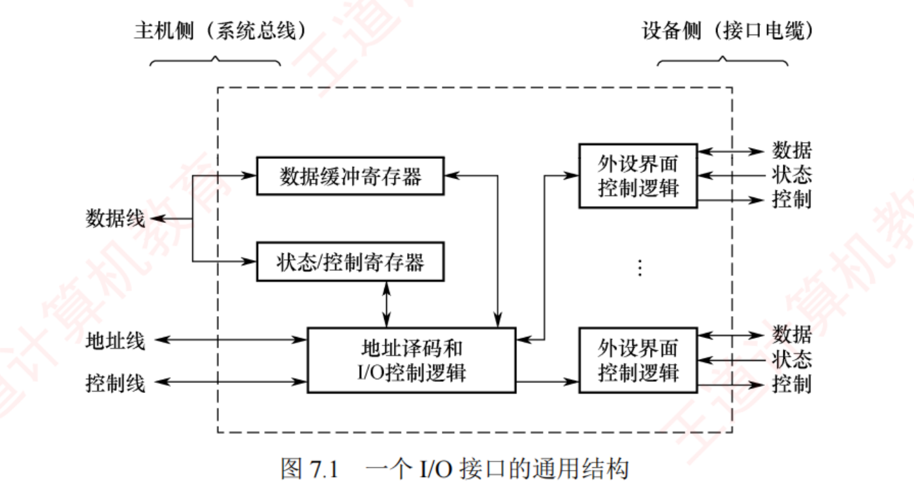
图 7.1 一个 I/O 接口的通用结构 （原书 p.294）——
这张图最该看懂的是它被一条虚线框劈成了「主机侧」和「设备侧」两半 ：
左边三组线（数据线/地址线/控制线）通往系统总线 ，右边每个「外设界面控制逻辑」各引出数据/状态/控制三组线通往接口电缆 。
框内三个部件是全章反复用到的：数据缓冲寄存器 （挂数据线）、状态/控制寄存器 （画成同一个框 ，呼应下面「可复用同一端口地址」）、
地址译码和 I/O 控制逻辑 （吃地址线和控制线）。
必记结论 · 接口里的三类寄存器
寄存器 存什么 CPU 怎么访问 数据缓冲寄存器 暂存 CPU 与外设之间传送的数据 可读可写 状态寄存器 记录接口及外设的当前状态 仅被 CPU 读取 控制寄存器 保存 CPU 发给外设的控制命令 仅被 CPU 写入
由此推出书上点名的一条结论 ：由于状态寄存器仅被读、控制寄存器仅被写，
二者访问方向相反且访问时间错开 ，
因此在某些设计中
可复用同一端口地址：读操作访问状态，写操作访问控制 。
⟹ 2014 真题选项 A「状态端口和控制端口可以合用同一个寄存器」判为正确 ，靠的就是这一句。
我的补讲 · 为什么「一个地址两个寄存器」不会打架
书上说 X ：状态与控制寄存器可复用同一端口地址。
潜台词是 Y ：
硬件是靠「读/写信号」这根线来二选一的，地址只负责选中这个「格子」，方向决定进哪个抽屉。
同一个端口地址 0x3F8：
IN R1, 0x3F8 ←【读】⟹ 硬件把【状态】寄存器的值送上数据线
OUT 0x3F8, R2 ←【写】⟹ 硬件把数据线上的值存进【控制】寄存器
★ 一个地址，两个物理寄存器，靠读/写控制信号选中谁
⟹ 省地址、省地址线，是真实硬件里的常见做法
所以能考 Z ：
这条既能正着考（2014 判 A 正确），也能反着考 ——
若哪天出现「数据端口和控制端口可以合用同一个寄存器」，那就错 了：数据端口本身可读可写，方向分不开。
必记结论 · 三种总线上跑什么（2012 真题原句）
总线 传送什么 数据线 读/写数据、状态信息、控制信息（命令字），以及中断类型号 （在向量中断中）地址线 要访问的 I/O 接口内部寄存器的端口地址 控制线 读/写控制信号 （区分寄存器访问方向）、中断请求与响应信号 、总线仲裁信号、设备握手信号
I/O 控制逻辑的三条职责 ：① 对控制寄存器中的
命令字进行译码 ，把生成的控制信号经外设界面控制逻辑送至外设；
②
输出 时把数据缓冲寄存器的内容发给外设，
输入 时把外设数据写入数据缓冲寄存器；
③
实时采集外设状态 并更新至状态寄存器。
陷阱 · 2012 真题：听起来像控制的，其实全走数据线
2012 问「在 I/O 总线的数据线 上传输的信息包括哪些」，三个选项——命令字、状态字、中断类型号——全对 。
这道题反直觉，因为这三样听起来都像「控制信息」。
判据只有一条：
凡是【寄存器里的内容】，都是「数据」 ⟹ 走【数据线】
只有【一根线上的高低电平】才是「控制」 ⟹ 走【控制线】
┌ 命令字 … 控制寄存器的内容 → 数据线 ✔
├ 状态字 … 状态寄存器的内容 → 数据线 ✔
├ 中断类型号 … 中断控制器给的一个编号 → 数据线 ✔
└ 读/写信号 … 一根线上的电平 → 控制线
⚠️ 特别注意「中断」被拆成了两半，分走两条线 ：
「中断请求 」「中断响应 」信号走控制线 （就是 INTR/INTA 那两根线）；
「中断类型号 」走数据线 （它是一个数，要占好几位）。
7.3.2 有一句原话把这条钉死了，先记住，到那一节还会再遇到 ：
「中断请求和响应信号通过 I/O 总线的控制线传输，而中断类型号则在中断响应阶段由中断控制器
经数据总线 提供给 CPU。」
知识串联 · 三类总线的分工在 ch6 已经定过一次
总线分类 「数据线传数据、地址线传地址、控制线传控制信号」这条分工是 ch6.1 定的通则，本节只是把它套用到 I/O 接口上。
ch6 有一道 2011 真题问「数据线上不可能传的是什么」，答案是握手信号 ——与本节 2012 真题正好是一正一反的一对 ：
2011 问「哪个不能走数据线」（握手信号，它是控制线上的电平），2012 问「哪些能走数据线」（命令字/状态字/类型号，它们都是寄存器内容）。
⟹ 两道题合起来，把「数据线上到底跑什么」问全了。
背景 · 接口类型的三种分法，只需记住第一种的括号
7.2.3 I/O 接口的类型 ：① 按数据传送方式（外设与接口一侧） 分并行接口 （一字节或一个字的所有位同时传送）和串行接口 （一位一位有序传送），接口需完成相应的并/串或串/并格式转换；
② 按主机访问 I/O 设备的控制方式分程序查询接口、中断接口和 DMA 接口 ；
③ 按功能灵活性分可编程接口 （通过编程改变接口功能）和不可编程接口 。
陷阱 · 括号里那句「外设与接口一侧」是整段唯一的考点
并行/串行说的是接口→外设那一侧 ，主机侧永远是并行的系统总线。
⟹ 2013 类型题选项「I/O 接口中主机侧数据宽度与设备侧数据宽度总是 一样的」是错 的。 最典型的反例就是磁盘 ：主机侧挂在 32/64 位并行总线上，设备侧是串行 写磁道（一次一位） ，宽度差 32 倍。
——一个盘面同一时刻只有一个磁头，一个磁头一次只能改变一个磁化点，物理上就只能串行。 反过来想：如果两侧宽度总是一样，接口的第 4 条功能「并/串转换」还有什么存在的必要？
📄 p.295
我的补讲 · 从图 7.1 能直接读出三道真题的答案
这张图信息量比它看起来大，把三处标注对上三道真题：
图上哪一处 对应哪道题 答案 状态/控制寄存器画成一个 框 2014 真题 A：状态端口和控制端口可否合用同一寄存器 可以 （读取状态、写入控制）左右两半的宽度标注不同 （主机侧系统总线 vs 设备侧接口电缆）习题 13 的 A：两侧数据宽度是否总是一样 不一定 数据缓冲寄存器直接挂在数据线上 2012 真题：状态字/命令字走哪条线 数据线 （它们是寄存器的内容 ）
另外图上还有一处细节容易忽略 ：
右侧画了多个 「外设界面控制逻辑」，中间用省略号连接 ——
说明一个 I/O 接口可以接多台外设 ，这正是「地址译码与设备选择」这条功能存在的理由
（接口要靠地址译码决定跟哪一台通信）。
7.2.4 I/O 端口及其编址
考点追踪：I/O 端口的定义及相关特性（2014）· I/O 指令的作用（2017）
必记结论 · 端口 ≠ 接口
I/O 端口 ＝ I/O 接口电路中可被 CPU 直接访问的寄存器 ，主要包括：
数据端口 （支持 CPU 读/写）、状态端口 （仅支持读 ）、控制端口 （仅支持写 ）。书上灰框原话：「端口与接口是两个不同概念：端口是接口内部可寻址的寄存器 。」 为使 CPU 能访问各 I/O 端口，必须对端口进行编址，每个端口对应一个唯一的端口地址 。
我的补讲 · 一个比喻把「接口/端口/设备」三层钉死
这三个词在本章至少被拿来设了 4 次陷阱（7.1 习题 01、7.2 习题 13/17、2017 真题），一次讲清：
┌──────────────────────────────────────┐
│ I/O 接口 = 一个【盒子】 │ ← 焊在总线上的是它
│ ┌────────┬────────┬────────┐ │
│ │数据端口│状态端口│控制端口│ │ ← 盒子里的【抽屉】
│ └────────┴────────┴────────┘ │ CPU 只够得到这一层
└──────────────────┬───────────────────┘
│ 电缆
┌──────┴──────┐
│ 外设本身 │ ← CPU 永远够不到它
└─────────────┘
由这张图直接读出三个真题答案 ：
① 「I/O 设备通过什么连系统总线」 ⟹
盒子 （设备控制器/接口），不是抽屉（端口）；
② 2017「I/O 指令实现的数据传送发生在哪」 ⟹
通用寄存器 ↔ I/O 端口 （抽屉），
不是 「通用寄存器 ↔ I/O 设备」——
CPU 摸不到设备 ；
③ 2021「下列不属于 I/O 接口的是」 ⟹
磁盘驱动器 （它是设备本身，在最下面那层）。
必记结论 · 两种编址方式（本节的分水岭）
独立编址 （I/O 映射方式）统一编址 （存储器映射方式）地址空间 独立于主存 ，地址值可以相同 但不冲突占用一部分主存地址空间 ，地址唯一靠什么区分 靠指令类型 / 两组控制信号 （存储器读写 vs I/O 读写）靠地址码 （地址落在哪一段）用什么指令 专用 I/O 指令 （x86 的 IN/OUT，通常是特权指令 ）普通访存指令 （LOAD/STORE/MOV）优点 地址线少、译码简单、寻址快；程序中 I/O 操作清晰可辨 ，便于阅读调试 编程灵活；I/O 端口可获得较大编址空间 ；保护机制可由虚存管理统一实现，无须额外硬件 缺点 I/O 指令功能有限、灵活性差 ；CPU 需同时提供两组控制信号 ，控制逻辑复杂 占用主存空间、减少可用内存 ；需按完整地址判断，译码复杂、可能降速
陷阱 · 全节最容易错的一句：靠「地址码」不是靠「地址线」
两种编址方式都是通过同一组地址总线 访问的。
（7.2.6 习题 03 解析原话：「两种编址方式都是通过相同的地址总线进行访问的，通过不同的编址策略和控制信号来区分。」）硬件上根本没有「一组线给内存、另一组线给 I/O」这回事。
⟹ 凡是选项写「靠不同的地址线 来区分」，无论前面说的是统一编址还是独立编址，一律是错的
（习题 03 的 B 和 C 两个选项就是同一个错法印了两遍）。正确说法：统一编址靠地址码 区分；独立编址靠指令类型 / 控制信号 区分。
我的补讲 · 统一编址还有一条隐性代价：地址必须成段
书上说 X ：统一编址的缺点是「需根据完整地址判断是否为 I/O 区域，译码电路相对复杂」。
潜台词是 Y ：
正因为要靠地址范围判断，I/O 地址就不能东一块西一块地散着放 。
若 I/O 地址【连续成段】（高端、低端、中间某段都行）：
译码只需比较高位若干位 ⟹ 电路简单
程序员/编译器/OS 也能用「地址范围」一眼判断
若 I/O 地址【零散分布】：
每个地址都要单独比对 ⟹ 译码电路爆炸
⟹ 「会给编程造成极大的混乱」（书上原话）
所以能考 Z ：
7.2.5 习题 09 问「统一编址下 I/O 地址不可取 的是」，
答案是 D「可以随意在地址的任何地方 」；而 A 高端、B 低端、C 相对固定在某部分都可取 ——
在哪不重要，成段才重要 。 （实际系统多把 I/O 放在
高地址段 ，正是 7.2.4 正文举的例子。）
知识串联 · 统一编址的那条优点直通虚存
地址空间 「I/O 访问的保护机制可由虚拟存储管理系统统一实现，无须额外硬件支持」 ——
这句话的完整含义要接上 ch3.6 ：既然 I/O 端口就住在主存地址空间里，
那么页表项里的读/写/执行权限位、用户态/内核态检查，对它同样生效 ，一分钱额外硬件都不用花。反过来，独立编址的 I/O 空间不归 MMU 管，只能靠「把 IN/OUT 定成特权指令」来保护 ——
这正是 7.2.2 末尾那句「在采用独立 I/O 地址空间的体系结构（如 x86），I/O 指令通常为特权指令，仅限操作系统内核使用 」的由来。
特权指令 ⟹ 再往前一步就是 OS 的用户态/内核态。
陷阱 · 「中断请求」跨不到外设那一侧
7.2.5 习题 11 是一道信息量极大的题：中断方式打印时，「打印控制接口 ↔ 打印机」之间交换的信息不包括 什么？答案是中断请求信息 。
┌──── 中断请求 ────┐ ← 只存在于这一段
↓ ↑
┌─────────┐ 系统总线 ┌──────────┐ 电缆 ┌────────┐
│ CPU │ ←───────→ │ 打印控制 │ ←───→ │ 打印机 │
└─────────┘ │ 接口 │ │ 外设 │
└──────────┘ └────────┘
└── 数据：打印字符的【点阵】信息
└── 控制：初始化 / 选通 / 自动走纸
└── 状态：联机 / 忙 / 缺纸
⟹ 接口 ↔ 外设 之间只跑「数据 / 控制 / 状态」三类；中断请求是接口 ↔ CPU 之间的事 。
这条还有一个常被忽略的推论：外设自己不会发中断请求 。
外设只把「我好了 / 我忙 / 我缺纸」这类状态 报给接口，由接口 判断该不该向 CPU 提中断。
⟹ 中断是接口 的行为，不是设备的行为。
顺带记住这题里三组具体信号，它们是「三类信息」最具象的例子；还有一句容易漏：字符转点阵是接口干的，不是 CPU 干的 。
必记结论 · 主机到外设的四段通路
CPU 和主存 ── I/O 总线 ── I/O 接口 ── 通信总线（电缆） ── 外设
I/O 接口是分界点：左边是主机侧（机箱内的 I/O 总线），右边是设备侧（机箱外的电缆）。
——这正是图 7.1 左右两半的标注「主机侧（系统总线）」与「设备侧（接口电缆）」。
⟹ 由此直接推出：两侧的数据线宽度不一定相同 （习题 13 的 A 是错的）。
背景 · 7.2 的四道真题，答案一句话各自记住
2012（习 14） ：数据线上传的包括命令字、状态字、中断类型号 ——三个全对 。2014（习 15） ：错的是「统一编址时 CPU 不能 用访存指令访问 I/O 端口」——恰恰能用，这就是统一编址的定义 。2017（习 16） ：I/O 指令的数据传送发生在通用寄存器 ↔ I/O 端口 之间。2021（习 17） ：不属于 I/O 接口的是磁盘驱动器 （它是磁盘本身）；打印机适配器 / 网络控制器 / 可编程中断控制器都是 。
我的补讲 · 2021 真题里最容易误选的是 D，值得单独说
「可编程中断控制器（PIC，如 8259A）不传数据，凭什么算 I/O 接口？」 ——这是很自然的疑问。
回到定义：I/O 接口的职责是「接收主机发送的 I/O 控制信号，并实现主机和外部设备之间的信息交换」。
中断控制器干的正是这件事 ：
把各外设的中断请求汇集、判优，交给 CPU；并在中断响应阶段经数据总线送出中断类型号
（↔ 上面 2012 真题那一条）。
它夹在主机与外设之间，而且可编程（属 7.2.3 的「可编程接口」）⟹ 是 I/O 控制器。
⚠️ 顺带把三个「驱动」分清，本章至少考过两次：
磁盘【驱动器】drive … 硬件，就是磁盘本身 ← 2021 真题答案
磁盘【控制器】controller … 硬件，I/O 接口
设备【驱动程序】driver … 软件，OS 里的一段代码 ← 2019 真题 DMA 那条
📄 p.299
我的补讲 · 两种编址方式的取舍，本质是一道「地址空间够不够用」的账
书上把优缺点列了四条四条，但它们其实全从一件事推出来：I/O 端口要不要占主存的地址 。
独立编址：I/O 自成一个（小）地址空间
⟹ 地址位数少 ⟹ 译码简单、快 （优点）
⟹ 主存空间不受影响 （优点）
⟹ 但 CPU 要同时提供两组读写控制信号 （缺点）
⟹ 且必须造一套专用指令，功能有限、不灵活 （缺点）
统一编址：I/O 挤进主存的地址空间
⟹ 不用造新指令，编程灵活 （优点）
⟹ 端口可获得很大的编址空间 （优点）
⟹ 保护机制白蹭虚存的 （优点）
⟹ 但吃掉了主存容量 （缺点）
⟹ 且要按完整地址判断是不是 I/O 区，译码复杂 （缺点）
所以能考 Z ：
凡是问「某某方式的优点/缺点是什么」，先想「它占不占主存地址」，
八条优缺点当场就能推出来，不用背。
历史上独立编址流行于地址空间紧张的年代（x86 只有 64K 个 I/O 端口）；
现代 64 位系统地址空间极大，统一编址（存储器映射 I/O）反而成了主流。
7.3 I/O 方式 （27 页 · 全章重心）
输入/输出系统实现主机与 I/O 设备之间的数据传送，可采用不同的控制方式。各种方式在硬件代价、系统性能及适用场景 等方面各有侧重。
常用的 I/O 方式包括程序查询、程序中断和 DMA 等，其中前两种方式高度依赖 CPU 执行程序指令来完成控制 。
我的补讲 · 开篇这一句就是整节的分水岭
书上说 X ：「前两种方式高度依赖 CPU 执行程序指令来完成控制」。
潜台词是 Y ：
查询和中断都要 CPU 一个字一个字地搬；DMA 不用。
这一句把三种方式劈成了 2 : 1，而不是 1 : 1 : 1。后面所有的对比题、所有的效率计算，都是从这条缝里长出来的。
把「一次 I/O」拆成两段看，三种方式的差别就一目了然：
第一段：外设【准备数据】的那段时间
查询 → CPU 死循环查状态 ⟹ 串行（CPU 被绑住）
中断 → CPU 去跑别的进程 ⟹ 并行
DMA → CPU 去跑别的进程 ⟹ 并行
第二段：数据【真正搬运】的那一刻
查询 → CPU 执行传送指令 ⟹ 串行
中断 → CPU 执行中断服务程序 ⟹ 串行 ★关键
DMA → DMAC 搬，CPU 不参与 ⟹ 并行 ★关键
⟹ 中断与 DMA 的【唯一】区别就在第二段。
所以能考 Z ：
7.3.4 习题 19 一题两空问「中断方式的特点是（ ），DMA 方式的特点是（ ）」，
答案是「CPU 与外设并行 + 传送与主程序串行 」和「两者都 并行」——上面这张表就是答案本身。
最容易错的是把中断也选成「都并行」，因为「中断能让 CPU 与外设并行」这句话太深入人心；
但只要想起「中断服务程序是 CPU 自己执行的」，就知道传送那一刻主程序是停着的。
我的补讲 · 三种方式是被「速度差」一步步逼出来的
不要把三种 I/O 方式当成三个并列的选项去背，它们是一条被问题推着走 的演进链：
问题 1：CPU 比外设快几个数量级，怎么配合？
⟹ 最朴素的办法：CPU 反复问「你好了没」
⟹【程序查询方式】
⟹ 新问题：CPU 全部时间都耗在问上（7-综03 算出 104.86%）
问题 2：能不能别问，让它好了来叫我？
⟹【程序中断方式】：外设准备好了主动发请求
⟹ CPU 在等待期间去跑别的进程 ✔
⟹ 新问题：每传一个字就要打断一次、保存恢复一次现场
高速设备下开销受不了（例 7.2 直接算出「不可行」）
问题 3：能不能连搬运也别让 CPU 管？
⟹【DMA 方式】：给它一条绕开 CPU 的通路 + 一套自己的寄存器
⟹ CPU 只管两头（预处理、后处理）✔
⟹ 代价：硬件开销较高，只对大批量传输划算
所以能考 Z ：
凡是问「为什么要有 X」，答案永远在前一种方式的缺点 里。
「DMA 为什么出现」＝「中断在高速成批传输下开销太大」（7.3.2 末尾那段宏观/微观评价就是原话）。
这条链也解释了为什么三种方式至今并存：慢设备用中断更划算，快设备才值得上 DMA 。
7.3.1 程序查询方式
考点追踪：程序查询方式的特点（2023）· 定时查询的特点、效率分析及计算（2011、2018）
在程序查询方式中，数据交换的控制完全由 CPU 通过执行程序实现 。接口电路通常包含一个数据缓冲寄存器（数据端口） 和一个设备状态寄存器（状态端口） 。
主机进行 I/O 操作时，首先读取设备状态 ，并据此决定是立即传送数据还是继续等待。
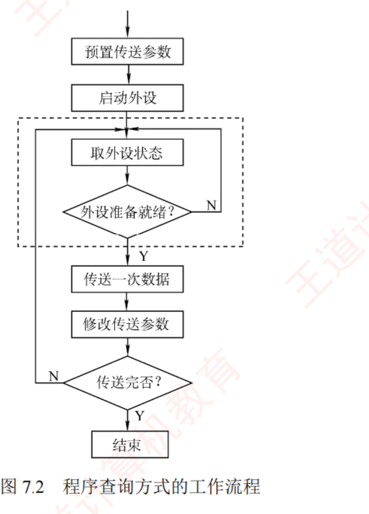
图 7.2 程序查询方式的工作流程 （原书 p.299）——
这张图只有一处必须看懂：中间那个虚线框 。框里是「取外设状态 → 外设准备就绪？ → N → 回到取外设状态」的死循环 ，
这就是「忙等待」的全部形状 。框外的「传送一次数据 → 修改传送参数 → 传送完否？」才是真正干活的部分。
⟹ CPU 绝大部分时间耗在虚线框里空转，这就是查询方式效率低的图形证据。
必记结论 · 六步工作流程 + 两类查询策略
六步 ：① CPU 执行初始化程序，
预置传送参数 （起始地址、数据量）→ ② 向 I/O 接口发命令字，
启动外设 →
③
循环读取 外设状态寄存器 → ④ 未就绪则继续查询，就绪则
执行一次数据传送 →
⑤
修改地址和计数器参数 （
主存地址 +1，计数值 −1 ）→ ⑥ 未完成回③，直至
计数器归零 。
策略 CPU 做什么 后果 独占查询 启动外设后连续不断地查询，直至操作完成 CPU 忙等待 ，无法执行其他任务，与外设完全串行 定时查询 以固定时间间隔周期性地 查询；未就绪就返回用户程序继续执行 CPU 能干别的；但查询间隔必须按外设速率合理设置，否则丢数据
优点 ：设计简单、硬件开销小。
缺点 ：CPU 耗费大量时间查询与等待，且
同一时间段内只能与一台外设通信 ，效率很低。
陷阱 · 「查询方式的分类」有两个易混项
① 程序查询方式分的是「定时查询 」和「独占查询 」 ，
不是「软件查询方式和硬件查询方式」 ——后者是 7.3.2 讲中断源识别 时的分类
（非向量中断＝软件查询法，向量中断＝硬件向量法），被搬到这里就是错的（习题 20 的 A）。② 「CPU 主要负责启动外设和查询其状态，不参与数据传送 」也是错的 ——
7.3.1 开篇第一句就写着「数据交换的控制完全由 CPU 通过执行程序实现 」（习题 20 的 B）。③ 「CPU 需要一直查询直到外设就绪才可去执行其他程序」只对独占查询 成立，对定时查询是错的 （习题 20 的 D）。⟹ 习题 20 四个选项里三个是这三条，唯一对的是 C「每完成一次数据传送后会修改主存地址和计数值」。
📄 p.299
必记结论 · 【例 7.1】定时查询的标准算例（2011/2018 真题模型）
题 ：主频
500MHz ，CPI ＝
4 ，外设数据传输速率
2MB/s ，I/O 接口配一个
32 位数据缓冲寄存器 ，
采用定时查询，
每次查询执行 10 条指令 。问 ① CPU 最多间隔多久查询一次才不丢数据？② 此时 CPU 用于该外设 I/O 的时间占比至少多少？
📐 三步列式（背式子，不背结果）：
① 查询间隔上限 = 缓冲区容量 ÷ 外设速率 ←「填满即溢出」
= 4B ÷ 2MB/s = 2μs
★ 32 位要先换成 4B 再去除以 MB/s
② 每秒查询次数 = 1 ÷ 查询间隔
= 1s ÷ 2μs = 5×10⁵ 次/s
③ 占用率 = 每秒次数 × 每次指令数 × CPI ÷ 主频
= 5×10⁵ × 10 × 4 ÷ 500M
= 2×10⁷ ÷ 5×10⁸ = 4%
Python 复算：2.0μs / 5×10⁵ 次 / 2×10⁷ 周期 / 4.0% ——四个数与书答逐个吻合 ✔
我的补讲 · 第 ① 步的判据「填满即溢出」值得单独想一遍
书上说 X ：「必须在外设填满该缓冲区前完成读取，否则新数据将覆盖未读取的旧数据」。
潜台词是 Y ：
算的是「填满整个 缓冲区」的时间，不是「传一个字节」的时间。
缓冲寄存器有多宽，你就有多少缓冲余量：
32 位（4B）缓冲寄存器，外设 2MB/s：
填满要 4B ÷ 2MB/s = 2μs ⟹ 你有 2μs 的余量
若换成 8 位（1B）缓冲寄存器，同样 2MB/s：
填满只要 1B ÷ 2MB/s = 0.5μs ⟹ 余量只剩 1/4
⟹ 每秒要查 2×10⁶ 次，占用率飙到 16%
★ 缓冲寄存器越宽，CPU 越从容 —— 这就是「数据缓冲」
这条接口功能的定量 意义。
所以能考 Z ：
凡是题干给了「N 位数据缓冲寄存器」，第一步一定是先把它换成字节数，再当分子。
2011、2018、2019、2020 四年真题的第一步全是这一下。
陷阱 · CPI 什么时候乘、什么时候不乘
这是本章计算题的第二大失分点，一条规则解决：
题干给「N 条【指令】」 ⟹ 必须 × CPI（把指令换成周期）
题干给「N 个【时钟周期】」 ⟹ 直接用，CPI 是【幌子】
对照四道真题：
真题 题干给的 乘不乘 CPI 2011 （选）「查询程序运行一次所用的时钟周期数 至少为 500」 不乘 （题目也没给 CPI）2018 第 1 问「每次输入/输出都至少执行 10 条指令 」 要乘 （× CPI 4）2009 第 1 问「服务程序含 18 条指令 ，其他开销相当于 2 条指令 」 要乘 （(18+2)×5 ＝ 100）2009 第 2 问「DMA 预处理和后处理的总开销为 500 个时钟周期 」 不乘 （CPI＝5 在这一问是幌子）
⟹ 同一道 2009 大题里，第 1 问要乘、第 2 问不能乘。动笔前先看开销的单位是「条」还是「周期」。
📄 p.300
知识串联 · 「忙等待」在 OS 里有个专门的名字
忙等待 独占查询里 CPU 死循环查状态的那段，在 OS 里叫忙等待（busy waiting） ，
也叫自旋（spin） ——正是自旋锁（spin lock）的那个自旋。 OS 对它的评价与本章一模一样 ：实现简单，但「违背了让权等待原则 」——
进程明明干不了活却占着 CPU 不放。 而定时查询 对应 OS 里的轮询（polling） ：隔一段时间来看一眼，中间去干别的。
⟹ 「查询 vs 中断」这一对，在 OS 里就是「轮询 vs 事件驱动」，是同一个权衡的两个名字。
陷阱 · 2011 真题是查询类计算里最简单的一道，别想复杂
题面 ：主频 50MHz，
查询程序运行一次所用的时钟周期数至少为 500 ，
每秒需查询至少 200 次 ，问占用率至少多少。
占用率 = 200 × 500 ÷ 50M = 100 000 ÷ 5×10⁷ = 【0.20%】
它把通常最难的第一步（算每秒查询次数）直接给你了，也没给 CPI（因为开销已经是「周期数」）。
⟹ 对照例 7.1 / 2018 就知道差别在哪：
每秒查询次数 每次开销 步数 2011 题目直接给 200 直接给 500 周期 一步 例 7.1 / 2018 要自己算 ：4B ÷ 2MB/s → 2μs → 5×10⁵给 10 条指令，要 × CPI 三步
⟹ 拿到查询题先问两句：「每秒查几次？给了没有？」「开销是条 还是周期 ？」——问完就知道要走几步。
7.3.2 程序中断方式
程序中断 是指在计算机执行程序的过程中，当出现某些急需处理的外部事件或内部异常 时，
CPU 暂停当前程序的执行，转去处理该事件或异常；处理完毕后，再返回到原程序的断点处继续执行 。
中断技术最初被用于实现主机与 I/O 设备之间的异步通信 。
背景 · 中断技术的七项功能，知道有这么回事即可
① 实现 CPU 与 I/O 设备的并行工作；② 处理硬件故障和软件异常；③ 支持人机交互（键盘输入、鼠标点击）；
④ 支撑多道程序与分时操作系统的任务切换；⑤ 满足实时系统对快速响应的需求；
⑥ 实现用户程序向操作系统的切换（软中断或系统调用指令）；⑦ 在多处理器系统中协调各处理器间的通信与任务迁移。这七条从没被单独考过，但它解释了一件事：中断早就不只是「I/O 用的」了 ——⑥⑦ 已经是 OS 和多核的地盘。
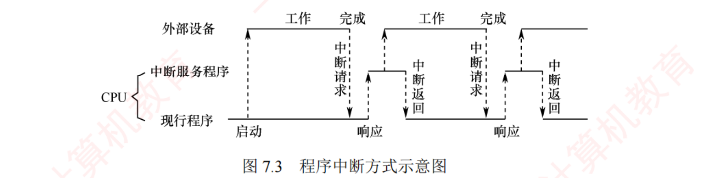
图 7.3 程序中断方式示意图 （原书 p.300）——
这张图要横着看：上排是外部设备的时间轴（工作→完成→工作→完成），下排是 CPU（分「中断服务程序」和「现行程序」两层）。
最关键的一点是：外设「工作」的那一整段时间里，CPU 一直在下层跑现行程序——这就是「并行」的图形定义。
只有在外设「完成」时向上发出中断请求 ，CPU 才响应 、跳到中断服务程序、搬完数据、中断返回 。
⟹ 把这张图和图 7.2 的虚线框并排看：一个在空转，一个在干活。
必记结论 · 中断的基本工作思想（书上原话，答简答题直接抄）
当前进程发起 I/O 操作时，会启动相应外设，并主动进入阻塞状态 ；CPU 随即转而执行就绪队列中的另一进程 ，实现外设与 CPU 的并行工作。
外设完成数据准备后，主动向 CPU 发出中断请求 。CPU 响应后，暂停当前指令流，保存现场 ，并转入中断服务程序，完成主机与外设之间的数据传送。
数据传送结束后，CPU 恢复被中断进程的现场，并返回断点处 继续执行。此后，外设与 CPU 再次并行工作。
知识串联 · 「主动进入阻塞状态」这五个字是 OS 的接口
进程状态 「当前进程发起 I/O 时主动进入阻塞态，CPU 转去执行就绪队列中的另一进程」——这是组原教材里出现的 OS 语言 。
它对应 OS 的进程三态转换：运行 →（请求 I/O）→ 阻塞 →（I/O 完成，中断唤醒）→ 就绪。 ⟹ 2022 真题（7.3-49 的 D 选项）判「外设为某进程准备数据时 CPU 可运行其他进程」为正确 ，靠的正是这一句。
⟹ 也正是这一句解释了「为什么中断方式能提高 CPU 利用率」：不是 CPU 变快了，而是它被腾出来去跑别的进程 了。
📄 p.300
必记结论 · 【例 7.2】中断方式的可行性判据
考点追踪：程序中断的效率分析及相关计算（2009、2014、2016、2018、2019）
题 ：同一台机器（主频 500MHz，CPI ＝ 4，32 位缓冲寄存器），
外设速率改成 40MB/s ，
每次中断响应与中断处理共需至少 400 个时钟周期 ，问该外设能否采用中断 I/O 方式？
📐 只需算两个时间再比大小：
T中断 = 中断响应 + 处理 = 400 × (1 ÷ 500MHz) = 0.8μs
T设备 = 外设填满缓冲区 = 4B ÷ 40MB/s = 0.1μs
0.1μs < 0.8μs
⟹ CPU 还没处理完上一次中断，新数据已经到了
⟹ 缓冲区被覆盖，【必丢数据】
⟹ 该高速外设【不适合】直接使用单字中断方式
★ 判据（全章通用）：
T设备 > T中断 ⟹ ✔ 可行
T设备 < T中断 ⟹ ✘ 不可行，必须上 DMA
Python 复算：0.8μs 与 0.1μs，与书答一致 ✔
我的补讲 · 例 7.1 和例 7.2 是故意做成的对照实验
书上说 X ：两个例题各自独立地算了一遍。
潜台词是 Y ：
它们是同一台机器 （500MHz、CPI 4、同一个 4B 缓冲寄存器），只改了外设速率（2MB/s → 40MB/s）。
王道是在用一组控制变量告诉你「快 20 倍的设备会发生什么」。
例 方式 外设速率 T设备 结果 例 7.1 定时查询 2MB/s 2μs 可行，CPU 占用 4% 例 7.2 中断（单字） 40MB/s 0.1μs 不可行 （0.1 < 0.8）
所以能考 Z ：
这两个例题＋后面的例 7.4，合起来就是 2018 那道 15 分综合真题 。
王道把一道真题拆成了三个例题分散在正文里 —— 读懂这三个例题，2018 大题直接会做。我在 7.3.3 末尾会把三方对照表完整列出。
陷阱 · 2022 真题把这条判据的不等号写反了
2022 真题问「关于中断 I/O 方式，下列不正确 的是」，错的那项是： 「外设准备数据的时间应小于 中断处理时间」 正确说法是「应大于 」——与例 7.2 的判据一字不差。 解析里那段机制描述值得整段记住 ：设备为进程准备的数据先写入设备控制器的缓冲区（大小有限） ，
缓冲区每写满一次就发一次中断请求；CPU 处理中断的过程，就是把缓冲区数据「取走」的过程 。
若准备时间 < 处理时间，外设写入的速度就快于 CPU 取走的速度，缓冲区数据被覆盖。 ⟹ 一个形象的比喻：缓冲区是个杯子，外设往里倒水，CPU 负责端走。倒得比端得快，杯子就溢了。
知识串联 · 「缓冲区被覆盖」是 408 里反复出现的同一个模型
空间换时间 「用一个小而快的中转站弥合两端速度差」这个模式，在 408 里至少出现五次 ：
中转站 弥合谁与谁 「装不下」时发生什么 I/O 数据缓冲寄存器 （本章）CPU ↔ 外设 新数据覆盖旧数据 ⟹ 丢数据 Cache（ch3.5） CPU ↔ 主存 替换（LRU 等），不丢，只是慢 TLB / 快表（ch3.6） CPU ↔ 页表 替换，不丢，只是慢 主存（虚存，ch3.6） CPU ↔ 磁盘 缺页调入，不丢，只是慢 路由器队列（网络） 快链路 ↔ 慢链路 队列满则丢包
⟹ 关键差异：Cache/TLB/虚存的「装不下」只会变慢，而 I/O 缓冲区和网络队列的「装不下」是真的丢数据 ——
因为数据源（外设、对端主机）不会等你 。这就是为什么 I/O 这一章处处在算「来不来得及」。
📄 p.301
程序中断的工作流程（一）中断请求
考点追踪：中断工作流程中的相关细节（2017、2018、2021、2024）· 可屏蔽中断和不可屏蔽中断的特点（2020）
必记结论 · 中断请求标记触发器
中断源 ＝ 能够向 CPU 发出中断请求的设备或事件 。一台计算机允许多个中断源同时存在 ，且各中断源发出请求的时间具有随机性 。每个中断源设置一个中断请求标记触发器 ：状态为「1」时表示该中断源有中断请求 。
这些触发器可组成中断请求标记寄存器 ，该寄存器可集中置于 CPU 内部，也可分散在各个中断源中 。
我的补讲 · 为什么非要设一个触发器把请求「钉住」
书上说 X ：为每个中断源设一个中断请求标记触发器。
潜台词是 Y ：
因为「请求到来的时刻」和「CPU 能理它的时刻」对不上——中间存在一个时间错位。
7.3.2 注意框原话：
「I/O 设备的就绪时间是【随机的】，
而 CPU 仅在【每条指令执行结束时】统一采样中断请求信号」
外设：──┬─────┬───────┬── 请求可能在任意时刻冒出来
↓ ↓ ↓
CPU ：──|──|──|──|──|── 只在这些刻度上「看一眼」
⟹ 请求若不被【锁存】，等 CPU 回头看时早就消失了
⟹ 用一个触发器把它钉住，直到被响应才清除
所以能考 Z ：
7.3.4 习题 14 问「为什么要在 I/O 接口中设置中断触发器」，答案是
C「CPU 无法对发生的中断请求立即进行处理」 ——即时间错位。
⚠️ 强干扰项是 D「可能有多个中断同时发生」——那是要判优 的理由，不是要锁存 的理由。
两件事、两个部件：多个同时来 ⟹ 判优逻辑；CPU 一时理不了 ⟹ 触发器锁存。
必记结论 · 可屏蔽中断 vs 不可屏蔽中断（2020 真题）
可屏蔽中断 不可屏蔽中断 信号线 INTR NMI 优先级 较低 最高 关中断状态下 不被响应 照样响应 （不受中断允许标志影响）用途 一般 I/O 紧急且关键的硬件事件 （电源掉电、总线错误等）
陷阱 · 2018 真题里一句「课外」结论，别的地方没讲过
「外部设备通常不能发出不可屏蔽中断 。」 （2018 真题解析原话）理由 ：外部设备的中断请求通常是为了输入/输出，这些事件并不是系统级的紧急事件，可以被屏蔽或延迟处理 ；
若允许外部设备发出不可屏蔽中断，则可能影响系统的稳定性和安全性 。⟹ NMI 是留给「机器要挂了」这个级别的事件的（掉电、总线错误）；键盘、打印机、网卡一律走 INTR，都可屏蔽。
知识串联 · 中断源的分类，三处各讲了一遍
中断 「什么算中断源」这件事，ch5.5、本章、OS 各有一套说法，考试时三套都可能出现：
视角 怎么分 典型例子 ch5.5（按来源） 内中断（异常） vs 外中断（中断） 内：缺页、除零、非法操作码、系统调用；外：I/O 完成、定时器、掉电 ch5.5（按异常细分） 故障 fault / 自陷 trap / 终止 abort 故障：缺页（要重执行当前指令 ）；自陷：系统调用（往下走） 本章（按能否屏蔽） 可屏蔽 INTR vs 不可屏蔽 NMI INTR：普通 I/O；NMI：掉电、总线错误
⟹ 三年真题（2009、2020、2025）问的都是第一套分法：「哪个属于外部 中断」，
判据始终是「这件事是不是CPU 执行指令以外 发生的」。
⚠️「访存缺页」在 2009 和 2020 两年都作为错项出现，是本考点的钉子户干扰项，见到直接划掉。
（二）中断响应判优
必记结论 · 全章第一条分界线（我会在正文里标 5 次）
中断优先级包括响应优先级 和处理优先级 （书上灰框原话）：
响应优先级 处理优先级 由谁决定 硬件线路或查询顺序固定 决定 中断屏蔽字 能否改 不可动态更改 可动态调整 决定什么 多个中断同时请求 时谁先被响应开始执行 的顺序 本中断能否打断 正在执行的服务程序执行完 的次序
二者的关系（灰框原话）：只有未被屏蔽的中断请求，才会被送入中断判优电路参与响应优先级的判定。
响应判优的一般规律 ：①
不可屏蔽中断 > 可屏蔽中断 ；
② I/O 传送类中断中：
高速设备 > 低速设备；输入设备 > 输出设备；实时设备 > 普通设备 。
判优通常由硬件排队器（或中断查询程序） 实现。
我的补讲 · 用「门票」和「排队规则」两个词把这条永久分开
书上说 X ：只有未被屏蔽的请求才会被送入判优电路。
潜台词是 Y ：
屏蔽字和判优电路是串联 的两道关卡，它们管的是完全不同的事。
中断请求 ──▶【屏蔽字】──▶【判优电路】──▶ 被响应
↑ ↑
「门票」 「排队规则」
决定你能不能 进去之后按【硬件固定顺序】排
进这个门 （改不了）
⟹ 屏蔽字【改不了排队规则】，只改「谁能来排队」
⟹ 所以它叫「【处理】优先级」，不叫「【响应】优先级」
所以能考 Z ：
这条至少被考了四次，每次都只差一个字：
出处 说法 判 习题 04 的 Ⅴ 「中断响应 判优是根据中断屏蔽字来确定优先级」 错 习题 17 「设置中断屏蔽标志可以改变多个中断服务程序执行完的次序 」 对 2020 真题 D「可通过中断屏蔽字改变可屏蔽中断的处理 优先级」 对 2024 真题 A「中断屏蔽字用于确定中断响应 的优先级」 错 ⟸ 这题就死在这一字上
⟹ 考场口诀：看到「开始 / 同时请求谁先被理」想响应 ；看到「执行完 / 嵌套 / 打断」想处理 。
我的补讲 · 判优的两条规律，背后是同一条道理
书上给的响应判优一般规律有两条，看起来是经验之谈，其实都能推：
规律 为什么 不可屏蔽中断 > 可屏蔽中断 NMI 管的是掉电、总线错误 ——机器都要挂了，别的都不重要 高速设备 > 低速设备 快设备的缓冲区更快被填满，等不起 （这与「DMA 优先于 CPU」是同一条理由）输入设备 > 输出设备 输入的数据不取走就被覆盖 ；输出慢一点只是慢，数据还在 实时设备 > 普通设备 实时设备有硬性时限 ，错过就失效
⟹ 四条规律归成一句：「谁等不起，谁优先」 ——判据是「延迟一点会不会丢数据 / 失效 」，
而不是「谁更重要」。
这条判据同样解释了 DMA 为什么在总线仲裁上优先于 CPU：CPU 晚访存一个周期只是慢，DMA 晚了会丢数据。
（三）CPU 响应中断的条件
考点追踪：CPU 响应中断的条件（2023）
必记结论 · 三个条件（7.3.2 版本，做选择题最常用）
① 存在有效的中断请求 ；CPU 处于开中断状态 （中断允许标志为 1；异常和不可屏蔽中断不受此限制 ）；当前指令已执行完毕 （异常不受此限制 ），且无更高优先级任务待处理 。灰框原话 ：I/O 设备的就绪时间是随机的，而 CPU 仅在每条指令执行结束时统一采样中断请求信号 （前提是开中断）。
因此，CPU 响应 I/O 中断的时机总是发生在某条指令执行完成之后 。此处所述中断特指 I/O 中断，不包括异常 。
我的补讲 · 「7.4 小结」给了另一套三条件，两套都要认
书末 7.4 回答章首问题时，用的是完全不同的一套措辞，很多人对不上：
7.3.2 版（逻辑视角） 7.4 版（硬件触发器视角） ① 存在有效的中断请求 CPU 内部的中断屏蔽触发器 处于开放状态② CPU 处于开中断状态 外设发出中断请求，且接口中的中断请求触发器 置「1」 ③ 当前指令已执行完毕，无更高优先级任务 外设接口的中断允许触发器 为「1」，才能把请求送达 CPU
7.4 版多告诉了你一件 7.3.2 没讲的事 ：
三个触发器分居两处 ——中断屏蔽触发器在 CPU 里 ，
中断请求触发器和中断允许触发器在 I/O 接口里 。
⟹ 这解释了「为什么外设自己发不出中断」：请求要经过接口里的中断允许触发器 放行，
才轮得到 CPU 里的屏蔽触发器 决定理不理。两道闸门，一道在接口、一道在 CPU。
陷阱 · 本章的「红旗词」：只要 / 一定 / 立即 / 所有
中断这一节到处是例外（「除非被屏蔽」「除非关中断」「异常不受此限」），
所以凡是绝对化措辞的选项，几乎必错 ：
出处 说法 漏了什么 习题 12 的 D 「只要 有中断请求发生，一条指令执行结束后 CPU 就 进入中断响应周期」 漏了「开中断」和「未被屏蔽」 2018 的 D「有中断请求时，CPU 立即 暂停当前指令执行」 必须等指令做完；且可能关中断/被屏蔽 2020 的 B「一旦 可屏蔽中断请求信号有效，CPU 就立即 响应」 请求有效只是三条件的第一条 2013 的 D「中断 I/O 方式适用于所有 外部设备」 高速外设不行（例 7.2）
⚠️ 但有一个例外必须记牢：「CPU 检测到 中断请求就一定响应」是对 的！
因为「检测到」这三个字已经蕴含了「未被屏蔽 + 开中断」——被屏蔽的请求进不了判优电路，CPU 根本检测不到。
（7.5 常见问题 1 原话；2021 真题的 B/D、2023 真题的 C 都靠这条判「正确」。）
⟹ 一词之差，全章分水岭：「有 请求就响应」错，「检测到 请求就响应」对。
📄 p.301
我的补讲 · 把「响应中断」的完整时间线画出来，八道题一次解决
本章有八道题在问「什么时候响应」「响应时做了什么」「谁先谁后」，画一条时间线全部对上：
┄┄ 正常执行指令 ┄┄┄┄┄┄┄┄┄┄┄┄┄┄┄┄┄┄┄┄┄┄
│
①【指令执行完毕】← 唯一的采样点（异常除外）
│
② 检查三条件：有请求？开中断？无更高优先级？
（被屏蔽的请求根本进不到这一步，CPU「检测不到」）
│
③【中断响应周期】= 中断隐指令（硬件自动）
· 关中断（把允许中断触发器置 0）
· 保存断点（PC + PSW → 栈）
· 发中断响应信号、取中断类型号（经数据总线）
· 形成向量地址 → 取中断向量 → 送 PC
│
④ 转入【中断服务程序】（软件从这里开始）
· 保存现场和中断屏蔽字
· 开中断（多重）/ 不开（单重）
· 执行服务程序主体
· 关中断 → 恢复现场和屏蔽字 → 开中断 → 中断返回
对上八道题 ：
习 07（响应在指令执行之末 ）· 习 11（响应周期做关中断、保存断点、发响应信号并形成向量地址 ）·
习 15（置 0 由中断隐指令 ）· 习 16（最先 是关中断）· 习 18（保存 PC 和 PSW ）·
习 27（PC 由硬件 保存更新）· 2012（隐指令三件事）· 2016 第 3 小问（关中断、保存断点和程序状态、识别中断源 ）。
（四）中断响应过程 —— 中断隐指令
考点追踪：中断隐指令的功能（2012）
必记结论 · 中断隐指令＝「关、存、寻」三件事
CPU 响应中断后，由硬件自动 完成一系列操作（称为中断隐指令 ），随后转入中断服务程序。
中断隐指令并非指令系统中的真实指令 ，而是对硬件自动操作的统称 。
步 动作 为什么必须是它、必须在这个位置 ① 关 中断防止在保存断点和现场时被新中断打断；否则现场不完整，中断返回后无法正确恢复原程序 ② 存 断点（PC 和 PSW）保存至栈或专用寄存器，保证中断返回后能正确恢复原程序执行 ③ 寻 中断服务程序入口通过识别中断源，把对应服务程序的入口地址送入 PC
脚注给的实现差异 ：
x86 保存 PC 和 PSW 到内存栈中；MIPS 没有 PSW，只保存 PC 到特定寄存器中。
我的补讲 · 为什么断点非得由硬件存 —— 一个逻辑死结
书上说 X ：断点信息由硬件在中断响应阶段自动保存。
潜台词是 Y ：
这不是「硬件更快」的效率问题，而是「软件根本做不到」的逻辑问题。
🔒 假设断点由软件保存：
要保存 PC，就得【执行一条指令】
但【执行任何指令都会改变 PC】
⟹ 等你执行到那条「保存 PC」的指令时，
原来的 PC 早就没了
⟹ 断点丢失，中断返回时不知道该回哪
⟹ 所以断点【必须在转入服务程序之前、由硬件自动完成】
而现场（通用寄存器）为什么可以交给软件？ 因为
① 现场信息用普通指令就能直接访问；
② 通用寄存器有几十个，只有服务程序自己知道它要动哪几个，全存太浪费。
所以能考 Z ：
⟹ 断点＝硬件存，现场＝软件存。这是全章第二条分界线。
真题 说法 判 2012 中断隐指令除保存断点外还包括：Ⅰ 关中断、Ⅲ 形成入口地址送 PC（Ⅱ 保存通用寄存器不属于 ） 仅 Ⅰ、Ⅲ 2018 的 B「CPU 响应中断时，通过执行中断隐指令完成通用寄存器 的保存」 错 2024 的 B、C「保存断点和 PSW 在中断响应阶段 完成」；「保存通用寄存器和设置新屏蔽字由软件 实现」 都对
必记结论 · 中断与异常的断点差异（书上原话，三行表）
类型 何时触发 断点是谁 处理后 中断 （外中断）指令执行完成后 下一条指令地址 接着往下走 故障类异常 （缺页、除零）指令未完成 当前指令地址 重新执行当前指令 陷阱类异常 （系统调用）指令成功执行后 触发 下一条指令地址 接着往下走
知识串联 · 这张表在 ch5.5 已经出现过一次
中断 「断点四行表」是 ch5.5 异常和中断机制的核心表，本章又原样考了一遍。
ch5 侧重「CPU 内部怎么检测和分类」（故障 fault / 自陷 trap / 终止 abort），
本章侧重「I/O 中断怎么用」——同一套机制的两个切面。 ⟹ 复习到这里若对「故障退回重做、自陷与中断都往下走」还不熟，回 ch5.5 补，
因为 2020 真题（缺页是不是外中断）和 2025 真题（页故障处理结束、执行断点指令）都在这张表上出题。
📄 p.302
我的补讲 · 「隐指令」这个名字骗了很多人
书上说 X ：中断隐指令并非指令系统中的真实指令，而是对硬件自动操作的统称。
潜台词是 Y ：
它带「指令」二字，却没有操作码、没有编码、取不出来 ，
在任何一本指令手册里都查不到。「隐」字的意思是隐藏在硬件里，对程序员不可见 。
中断隐指令 中断返回指令 （IRET）是不是真指令 不是 （硬件动作的统称）是 （在指令系统里）能否写进程序 不能 能 （服务程序的最后一条就是它）属于哪类指令 不属于任何一类 程序控制类
所以能考 Z ：
习题 10 问「下列不属于 程序控制指令的是」，答案是 C 中断隐指令 ——
因为它根本不在指令系统中 ，谈不上属于哪一类。
而无条件转移、条件转移、循环指令都是货真价实的程序控制指令。
（五）中断向量
考点追踪：中断向量表的数据结构（2023）
必记结论 · 四层链条（本章最易混的三个名词）
中断识别分为
向量中断 和
非向量中断 两类，
非向量中断采用软件查询法（已在第 5 章介绍） 。在向量中断中：
中断类型号 ──(× 表项长度)──▶ 向量地址 ──(取内容)──▶ 中断向量 ──(送 PC)──▶ 中断服务程序
名词 是什么 在哪 中断类型号 中断源的唯一编号 （一个数） 中断响应阶段由中断控制器经数据总线 送给 CPU 向量地址 中断向量表中某一项的内存地址 （＝类型号 × 表项长度） CPU 算出来的 中断向量 中断服务程序的入口地址 向量地址处存的内容 中断向量表 所有中断向量的集合 存放在内存 的特定区域
7.5 给的例子 ：
若表项占 4 字节、中断类型号为 5，则向量地址 ＝ 5×4 ＝ 20 （假设表从 0 开始）。
我的补讲 · 「向量地址」比「中断向量」多一层间接，画出来就不会错
书上说 X ：中断向量地址是中断向量表的地址。
潜台词是 Y ：
这是一个「指针的指针」结构，光靠中文名字分不清，必须画内存布局。
中断向量表（在内存的固定区域，设表项占 4B）
地址 内容
┌────────┬──────────────┐
│ 0 │ 0x8000 │ ← 0 号中断的服务程序入口
│ 4 │ 0x8200 │ ← 1 号中断的服务程序入口
│ ... │ ... │
│ 20 │ 0x9C00 │ ← 5 号中断的服务程序入口
└────────┴──────────────┘
↑ ↑
【向量地址】 【中断向量】
= 表项的地址 = 表项里存的内容
= 类型号 × 4 = 服务程序入口地址
⟹ 向量地址是「入口地址」的【地址】——多一层
所以能考 Z ：
7.3.4 用一正一反两道题问同一件事：
习题 02 的 C「中断向量地址是 中断服务程序的入口地址」判错 （少了「的地址」）；
习题 06 问「中断向量地址是（ ）」答 C「中断服务程序入口地址的地址」 。
⟹ 做完这两道，就再也不会混。
陷阱 · 中断的信号被拆成两半，走两条不同的线
书上灰框原话：「中断请求和响应信号通过 I/O 总线的控制线 传输，
而中断类型号则在中断响应阶段由中断控制器经数据总线 提供给 CPU。」
中断【请求】INTR ──▶ 控制线（一根线上的电平）
中断【响应】INTA ──▶ 控制线
中断【类型号】 ──▶ 数据线（它是一个数，要占好几位）
⟹ 这与 7.2 的 2012 真题完全对上了：数据线上传的包括命令字、状态字、中断类型号 。
⟹ 判据仍然是那一条：寄存器/编号这类「内容」走数据线，一根线上的电平才是「控制」。
📄 p.302
知识串联 · 向量中断 vs 非向量中断，与「优先级」无关
中断源识别 本节说「非向量中断采用软件查询法，已在第 5 章介绍」，两者的区别是怎么找到服务程序 ，不是谁更优先 ：
向量中断 非向量中断 怎么识别中断源 硬件向量法 ：中断源送类型号，硬件算出向量地址软件查询法 ：CPU 跑一段查询程序，逐个轮询中断源速度 快 （硬件直接产生）慢（要逐个查） 硬件成本 高（要中断控制器、向量表） 低
⚠️ ch5 的卡片里专门标过一条：向量/非向量与中断优先级无关 。
优先级是由判优电路和屏蔽字管的，与「用什么办法找到服务程序」是两回事。
⟹ 习题 02 的 B「中断向量方法可提高中断源的识别速度 」判正确，用词精准：它提高的是识别 速度，不是优先级。
（六）中断处理过程 —— 九步
考点追踪：单重中断的处理流程（2010）
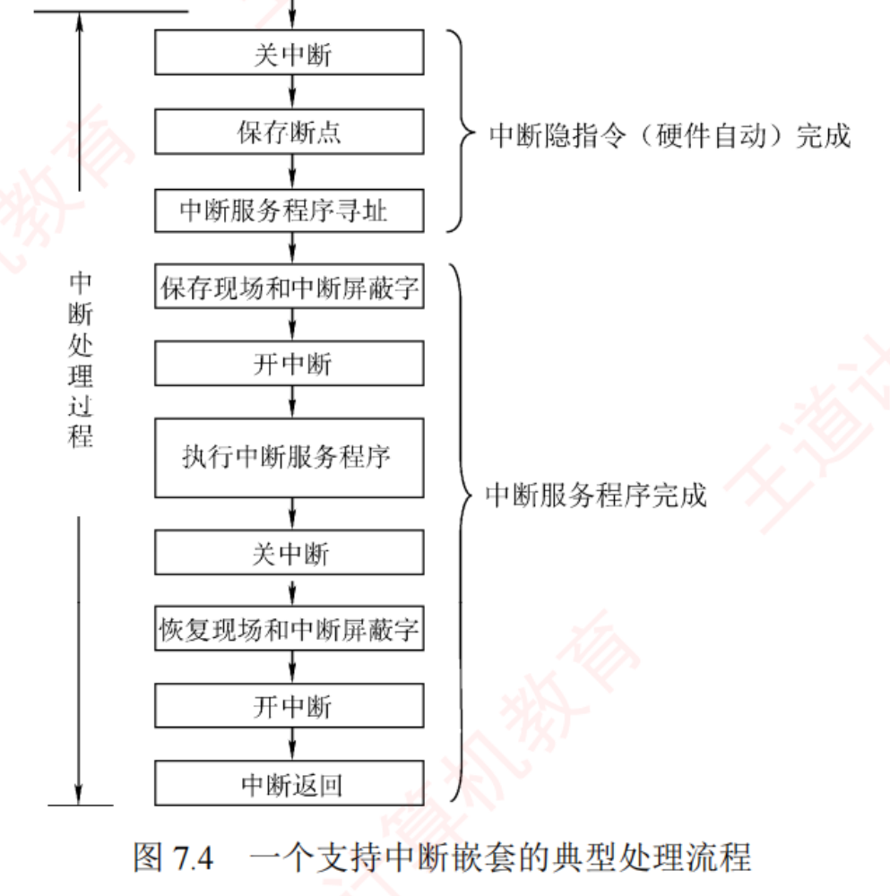
图 7.4 一个支持中断嵌套的典型处理流程 （原书 p.302）——
这张图的价值全在右边那两个大括号 ：上面三步被括成「中断隐指令（硬件自动）完成 」，
下面六步被括成「中断服务程序完成 」。整章关于「谁干的」的题，答案都在这两个括号里。
左侧那个贯穿全图的大竖括号标的是「中断处理过程」，说明这九步合起来才叫一次完整的中断处理 。
必记结论 · 九步流程（硬件 3 步 + 软件 6 步）
# 动作 谁完成 要点 ① 关中断 中断隐指令 防止保存关键信息过程中被新中断打断 ② 保存断点 由硬件自动 将断点信息保存至栈或专用寄存器③ 中断服务程序寻址 通过中断类型号 获取服务程序入口地址，送入 PC ④ 保存现场和中断屏蔽字 中断服务程序 通过软件指令 把现场信息和屏蔽字压入栈 ⑤ 开中断 由开中断指令实现，允许更高优先级中断被响应 ⟹ 实现中断嵌套 ⑥ 执行中断服务程序 真正干活的一步 ⑦ 关中断 由关中断指令实现，确保恢复现场时不被中断 ⑧ 恢复现场和中断屏蔽字 从栈中恢复寄存器内容及屏蔽状态 ⑨ 开中断、中断返回 最后一条指令通常是中断返回指令
⚠️ 单重中断（不支持嵌套）＝ 上述流程省略 ⑤（开中断）和 ⑦（关中断） ，全程关着。
我的补讲 · 同一个「关中断」在九步里出现两次，由不同的东西完成
这是全章最细的一个区分点，7.3.4 习题 15 专门考它：
① 关中断 ← 【中断隐指令】（硬件自动，在中断响应周期）
⋮
⑦ 关中断 ← 【关中断指令】（软件！服务程序里的一条真指令）
题干说「在【中断响应周期】中，由（ ）将允许中断触发器置 0」
⟹ 锁定第 ① 步 ⟹ 答【中断隐指令】
若题干改成「在恢复现场前」⟹ 就要答【关中断指令】了
同理，「开中断」也出现两次（⑤ 和 ⑨），两次都是软件 的开中断指令。
为什么 ① 必须是硬件？ 因为
此时一条软件指令都还没执行 ，而且
必须先关中断才能安全保存断点
（习题 16：CPU 响应中断时
最先 完成的步骤是
关中断 ）。
书上给的类比极好，值得记住 ：
「这个过程和操作系统中的信号量 PV 操作类似，
都是将内部过程变为不可打断的原子操作 」。
知识串联 · 「原子操作」是这一段与 OS 的接口
临界区 关中断 → 保存断点/现场 → （做完再）开中断，这个「用关中断把一段代码变成原子的」手法，
在 OS 里叫关中断实现临界区互斥 ，是最原始的一种互斥手段。 它的优缺点在 OS 里也讲过 ：优点是简单有效；缺点是关中断期间整个系统失去响应能力 ，
且在多处理器系统上无效 （只关得了自己这个核的中断）。 ⟹ 这正好解释了为什么第 ①～④ 步要尽可能短：这段时间机器是「聋」的。
陷阱 · 2010 真题：题眼是「服务程序内 」和「单重 」两个限定
2010 问「单重中断 系统中，中断服务程序内 的执行顺序」，给了七个选项 Ⅰ~Ⅶ。
解析用的是一个八步版本（与九步版略有出入，但分界一致） ：
① 关中断 ② 保存断点 ③ 识别中断源 ④ 保存现场 ⑤ 中断事件处理 ⑥ 恢复现场 ⑦ 开中断 ⑧ 中断返回，
其中 ①～③ 由硬件完成，④～⑧ 由中断服务程序完成 。
🔑 题眼 1：「中断服务程序【内】」
⟹ Ⅲ 关中断、Ⅳ 保存断点 都是【硬件】干的，不该出现在答案里
⟹ 一次排除 B（含Ⅲ）、C（含Ⅲ、Ⅳ）、D（含Ⅳ）⟹ 只剩 A
🔑 题眼 2：「【单重】中断系统」
⟹ 中途不开中断，开中断只出现在【最后、返回之前】
⟹ A 的顺序 Ⅰ保存现场→Ⅴ处理→Ⅵ恢复现场→Ⅱ开中断→Ⅶ返回 ✔
为什么开中断要排在「恢复现场之后」？ 因为
恢复现场同样必须是原子的 ——
恢复到一半被打断，寄存器就成了半新半旧的混合体。⟹ 恢复完了才敢开门。
📄 p.303
我的补讲 · 九步流程的对称结构，记住一半就够
九步不用硬背，它是严格对称 的：
① 关中断 ┐
② 保存断点 ├ 硬件（进）
③ 服务程序寻址 ┘
─────────────────
④ 保存现场和屏蔽字 ←──┐
⑤ 开中断 ←─┐│
───────────────── ││ 对称
⑥ 执行中断服务程序 ││
───────────────── ││
⑦ 关中断 ←─┘│
⑧ 恢复现场和屏蔽字 ←──┘
⑨ 开中断、中断返回
★ ④⑤ 与 ⑧⑦ 完全镜像：
保存现场 ←→ 恢复现场
开中断 ←→ 关中断（都是为了把这段变成原子操作）
★ 单重中断 = 把 ⑤ 和 ⑦ 这对镜像删掉 ⟹ 全程关中断
所以能考 Z ：
只要记住「④⑤ 进、⑦⑧ 出、⑥ 在中间干活」，
再加「单重中断删掉 ⑤⑦」，2010、2017、2024 三道真题就都能答。
⟹ 而且这个对称结构本身就是答案：为什么恢复现场前要关中断？因为保存现场后开中断了，得先关回去 。
3. 多重中断和中断屏蔽技术
考点追踪：多重中断的中断屏蔽字相关的性质（2017、2020、2021、2024）
在 CPU 执行中断服务程序的过程中，若出现新的更高优先级中断请求，而 CPU 不予响应 ，则称为单重中断 ；
若 CPU 暂停当前中断服务程序，转去处理新中断 ，则称为多重中断（也称中断嵌套） 。
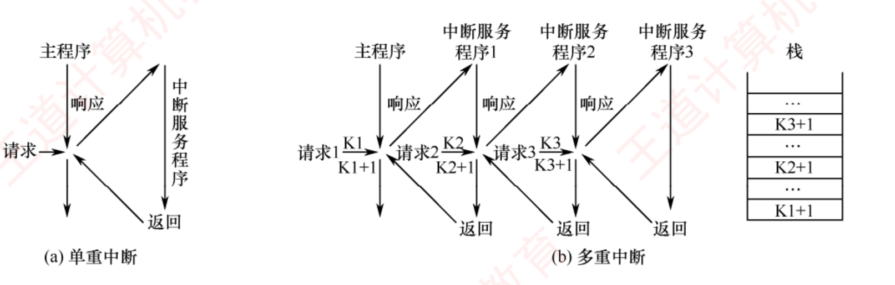
图 7.5 单重中断和多重中断示意图 （原书 p.303）——
(a) 单重中断只有一层：主程序 → 请求 → 响应 → 服务程序 → 返回。
(b) 多重中断是三层嵌套，而右边那个「栈」才是这张图的精华 ：栈里自顶向下是 K3+1 / K2+1 / K1+1，
栈顶是最后压入的 K3+1，所以最先返回 。⟹ 中断嵌套的返回顺序＝后进先出，这张栈图就是证明。
书上的叙述也印证了这一点：中断请求 3 处理完毕后，CPU 从栈顶恢复断点，返回至中断服务程序 2 的断点（K3+1）处 ，
以此类推，最终返回主程序的断点（K1+1）。
必记结论 · 屏蔽字的物理实现（图 7.6）
中断处理优先级是多重中断的实际处理顺序，可通过中断屏蔽技术动态调整。
若不使用屏蔽技术，则处理优先级与响应优先级一致。
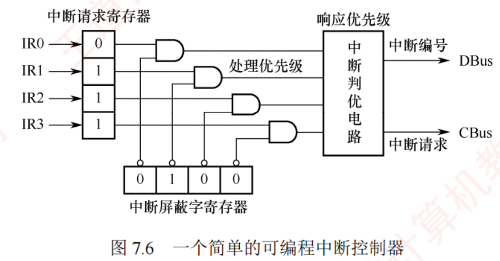
图 7.6 一个简单的可编程中断控制器 （原书 p.304）——
这张图是「屏蔽字」全部考点的物理基础，读法只有一条线 ：
左边中断请求寄存器 （图中 IR0=0、IR1~IR3=1）的每一位，与下方中断屏蔽字寄存器 对应位的
取反值 结果才送进右边的中断判优电路 （标注「响应优先级」），最后输出中断编号 → DBus 、中断请求 → CBus 。⟹ 图上「处理优先级」标在与门那一级、「响应优先级」标在判优电路那一级——
这两个标注本身就把两种优先级的分工画清楚了。
必记结论 · 屏蔽位的含义与生效范围
中断屏蔽字寄存器的每一位对应一个中断源：置 1 时屏蔽 对应的中断请求，置 0 时允许 其通过。
在送入判优电路前，每个请求信号会与其对应屏蔽位的取反值 做「与」 ——
仅当屏蔽位为 0 时，该请求才被允许参与仲裁 。因此被屏蔽的中断无法进入判优电路 。书上紧接着的一段是 2017/2020/2021/2024 四年反复考的：
中断屏蔽字通常在进入中断服务程序时由软件加载 ，用于控制后续中断的嵌套行为。因此，
中断屏蔽仅在 CPU 执行中断服务程序期间生效 ；而在主程序运行阶段，中断响应仍由主程序所设置的屏蔽状态决定（通常为全开放 ）。
此外，即使在中断服务程序执行期间，若有多个未屏蔽中断同时到达，其处理顺序仍由中断判优电路的响应优先级决定 。
我的补讲 · 上面那段话拆成三句，每句对应一道真题
# 结论 对应真题 1 屏蔽字改的是「谁能打断我」，不是「谁先被响应」 2024 的 A（错）· 习题 17（选 D）2 屏蔽字只在中断服务程序执行期间生效，主程序阶段一般全开 例 7.3 与 7-综04 的起手第一步都靠它3 同时到达的多个未屏蔽中断，仍按响应优先级排队 2021 的 B/D · 2023 的 C
第 2 条是做屏蔽字大题时最容易忽略的 ：
题目问「4 个中断源同时 请求，画出执行轨迹」，
起手时 CPU 还在主程序 里，屏蔽字一个都没加载 ，所以只能按响应优先级挑 。
⟹ 这就是为什么例 7.3 里 A、C、D 同时请求要先响应 A（响应级最高），而不是先响应处理优先级最高的那个。
📄 p.304
必记结论 · 【例 7.3】屏蔽字的构造规则
题 ：4 个中断源 A、B、C、D，
硬件响应优先级 A > B > C > D ，
要求把
处理优先级调整为 A > D > C > B ，写出各中断源的屏蔽字。
中断源 A B C D 含义 A （处理级最高）1 1 1 1 屏蔽所有（含自身）⟹ 独占 CPU 跑到底 D （第二）0 1 1 1 只允许被 A 中断 C （第三）0 1 1 0 允许被 A 和 D 中断 B （最低）0 1 0 0 仅屏蔽自身
屏蔽字第 Y 位 ＝ 1 ⟺ 「本中断源的处理优先级 ≥ Y 的处理优先级」
⭐ 两个秒验技巧 ：
① 对角线（自身位）必为 1 ——任何中断源都屏蔽自己，防同源重入，
可用来检查题面有没有抄错 ；
② 数每行「1」的个数，从多到少排就是处理优先级顺序 （本表 A 4 个 > D 3 个 > C 2 个 > B 1 个）。
我的补讲 · 屏蔽字题的两种问法，一正一反都要练
问法 做法 题目 正问 ：给处理优先级，求屏蔽字找到自己在处理优先级序列里的位置，屏蔽自己 + 所有比自己低的 ，再按题目规定的位序码字 例 7.3 · 2011 真题 反问 ：给屏蔽字，求处理次序数每行 1 的个数，降序排 习题 09 · 7-综04
⚠️ 正问最大的手滑点是位序 。 2011 真题写的是 M₄M₃M₂M₁M₀（左边是 M₄ ，下标从高到低） ，
若按 M₀M₁M₂M₃M₄ 写就全反了。动笔前先把五个格子标上下标。
2011 真题：五级中断 L₄~L₀，响应优先级 L₀→L₁→L₂→L₃→L₄
处理优先级 L₄→L₀→L₂→L₁→L₃，问 L₁ 的屏蔽字
① L₁ 在处理优先级里排第 4：L₄ > L₀ > L₂ > 【L₁】> L₃
② 屏蔽自己 + 比自己低的 ⟹ 屏蔽集合 = { L₁, L₃ }
③ 按 M₄M₃M₂M₁M₀ 码字：
M₄(L₄)=0 M₃(L₃)=1 M₂(L₂)=0 M₁(L₁)=1 M₀(L₀)=0
⟹ 01010 ✔（Python 复算一致）
★ 干扰项 B「01101」连自己都没屏蔽 —— 用【对角线必为 1】一眼看穿
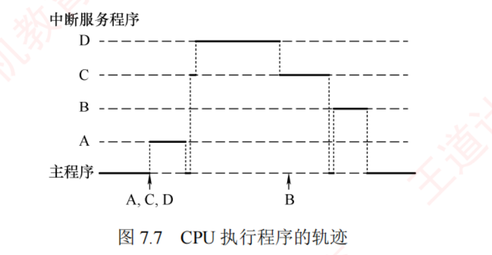
图 7.7 CPU 执行程序的轨迹 （原书 p.305，例 7.3 第 2 问的答案）——
纵轴自下而上是「主程序 / A / B / C / D」，横轴是时间。
读这张图要盯两个箭头 ：第一个箭头标 A, C, D （三者同时请求），折线跳到 A 层跑完落回主程序；
随后抬到 C 层但立刻被拉到 D 层 （D 打断 C），D 跑完落回 C 继续；
C 执行期间下方标 B （B 请求，被屏蔽，线纹丝不动）；C 跑完回主程序，最后才抬到 B 层。
陷阱 · 例 7.3 第 2 问：四个转折点，每个都能错
题设：响应优先级 A>B>C>D，处理优先级 A>D>C>B；A、C、D 同时请求，C 执行期间 B 又请求。
转折点 正确做法 常见错法 ① 三者同时请求，先理谁 看响应 优先级 ⟹ A 按处理优先级选 ⟹ 也是 A，碰巧不错；但下一步就露馅 ② A 为什么一口气跑完 进服务程序后加载屏蔽字 1111 ，屏蔽所有 ⟹ 不可被打断 以为「优先级最高所以不被打断」——其实是屏蔽字的功劳 ③ A 结束后剩 C、D，先理谁 仍看响应优先级 （C 的响应级高于 D）⟹ C 按处理优先级选 D ⟹ 错！这是本题最大的坑 ④ 为什么 D 能打断 C C 一进去就加载屏蔽字 0110 ，等于主动允许 D 打断自己 以为「D 处理级高所以自动插队」——其实是 C 让的
⟹ 一句话总纲：响应优先级决定「先进谁」，屏蔽字决定「进去之后谁能被谁踢开」。
另外，B 在 C 执行期间的请求不是丢了，是挂着等 ——C 结束回主程序后 B 才被响应。
（触发器把它钉住了，见前面「为什么要设中断请求标记触发器」。）
我的补讲 · 用「执行完的次序」自查轨迹对不对
轨迹画完别急着交，用一条规则自查 ：
各服务程序执行完 的先后，必须恰好等于处理优先级顺序。
例 7.3 轨迹：A → C → D → C(续) → B
执行完的次序：A 完 → D 完 → C 完 → B 完
处理优先级： A > D > C > B
⟹ 完全吻合 ✔
7-综04 轨迹：1 → 3 → 1(续) → 2 → 4 → 2(续)
执行完的次序：3 完 → 1 完 → 4 完 → 2 完
处理优先级： 3 > 1 > 4 > 2（由屏蔽字 1 的个数得出）
⟹ 完全吻合 ✔
这条自查法的根据，正是习题 17 那句「处理优先级决定了多个中断服务程序执行完的次序 」。
⟹ 它既是知识点，也是验算工具。
必记结论 · 程序中断方式的宏观/微观评价（DMA 的出场理由）
从宏观上看 ，程序中断方式克服了程序查询方式中 CPU 的忙等待现象，显著提高了 CPU 利用率 。但从微观操作分析 ，CPU 在处理中断时仍需暂停原程序的运行 。
尤其当高速设备频繁、成批地与主存交换数据时，会不断打断 CPU 现行程序以执行中断服务程序，造成较大开销 。⟹ 这段话就是 7.3.3 DMA 的出场理由，两节要连着读。
📄 p.305
知识串联 · 「后进先出」在这里第三次出现
栈 图 7.5(b) 右边那个栈（K3+1 / K2+1 / K1+1），和你在别处见过的是同一个东西：
场景 栈里存什么 为什么必须是栈 中断嵌套 （本章）各层的断点 Ki +1 后被中断的先恢复 ，天然后进先出 子程序嵌套调用 （ch4.3）返回地址 + 栈帧 后调用的先返回 递归 （数据结构 ch3）每层的局部变量 后展开的先收敛
⟹ 只要「嵌套」，就一定是栈。看到 K3+1 在栈顶，就知道中断 3 最先返回 。
这也是为什么 7.5 问题 3 说：子程序「嵌套深度主要受限于系统堆栈空间 」——同一个栈，同一个限制。
7.3.3 DMA 方式
考点追踪：DMA 方式的使用场景（2025）· DMA 方式中的数据传输通路（2024）· 周期挪用的特点及挪用次数分析（2012、2020、2022）· DMA 方式的效率分析及相关计算（2011、2018）· DMA 方式的传送过程（2019）· DMA 传送结束时的处理（2025）· DMA 与中断方式的对比（2013、2023）
DMA 方式是一种完全由硬件控制的数据传输方法。 它具有程序中断方式的优点 ，即在数据准备阶段，CPU 与外设可并行工作 ；
DMA 在外设与内存之间建立了一条直接的数据通路 ，使得信息传送无须经过 CPU ，从而显著降低 CPU 在数据传输过程中的负担。
正因如此，该方式被称为直接存储器存取 ，并避免了保存与恢复 CPU 现场等复杂操作 。
DMA 特别适用于磁盘、显卡、声卡、网卡等高速设备的大批量数据传输 ，但其硬件实现开销较高 。
在 DMA 方式中，中断的作用仅限于处理故障和正常传送完成的通知 。
陷阱 · 「直接的数据通路」里的「直接」是相对谁说的
这是本节最大的误解来源：很多人以为 DMA 是「在主存和外设之间拉了一根专线」。
7.3.4 综合题 01 就直接问：「DMA 方式下，主存和 I/O 设备之间有一条物理通路 相连吗？」——答案是没有 。
书上原话：其含义【并不是】在主存和 I/O 之间建立一条
物理直接通路，而是主存和 I/O 设备通过
【I/O 设备接口、系统总线及总线桥接部件】等相连，
建立一个信息可以相互通达的通路，
这在【逻辑上】可视为直接相连。
其「直接」是相对于【要通过 CPU 才能和主存相连】这种方式而言的。
⟹ 「直接」= 不经过 CPU
≠ 不经过任何中间部件
≠ 有一根专用物理导线
三道题合起来才是完整答案 ：
习题 29 （路径是「内存→数据总线→
DMAC →外设」，
必经 DMAC 的数据缓冲寄存器 ）·
2024 真题 （通路
位于 「设备接口和主存之间」，即两个
端点 ）·
综 01 （没有物理通路，是逻辑通路）。
必记结论 · DMA 方式的五个特点
① 打破主存与 CPU 的固定关联 ，主存既可被 CPU 访问，又可被外设直接访问 ；主存地址的生成与传送字数的计数均由硬件电路自动完成 ；主存中需设置专用缓冲区 ；高速数据传输 ，CPU 与外设可并行工作；传输开始前需由软件进行预处理 ，结束后则通过中断机制 完成后处理 。
我的补讲 · 第 ⑤ 条是最爱考的一条，它划定了「不用 CPU」的边界
书上说 X ：传输开始前需软件预处理，结束后通过中断完成后处理。
潜台词是 Y ：
DMA 不是「完全不用 CPU」，而是「数据传送阶段 不用 CPU」。一头一尾都要。
┌──────────────┐
│ ① 预处理 │ ←【CPU 干】设主存起始地址、传送方向、
│ │ 数据个数，并启动 I/O 设备
├──────────────┤
│ ② 数据传送 │ ←【DMAC 干】硬件循环，整块搬完，
│ │ CPU 同时跑主程序
├──────────────┤
│ ③ 后处理 │ ←【CPU 干】响应中断，执行服务程序：
│ │ 校验数据完整性，出错转诊断
└──────────────┘
⟹ 三段里【两段有 CPU】，只是那两段很短
⟹ 书上收束句：「CPU 仅在预处理阶段进行初始化，
在后处理阶段响应中断，因此用于 I/O 的开销【极小】」
—— 是「极小」，不是「零」
所以能考 Z ：
两个方向的极端说法都是错的：
错误说法 错在哪 出处 「一个完整的 DMA 过程，完全由 DMA 控制器控制，CPU 不介入任何控制 」 把 CPU 管得太少 ——漏了预处理和后处理习题 23 的 C 「DMA 方式下，通过 CPU 执行 DMA 传送程序 进行 I/O 操作」 把 CPU 管得太多 ——根本不存在「DMA 传送程序」这种东西 2023 真题 的 C
正确口径：CPU 管两头，中间交给硬件 。
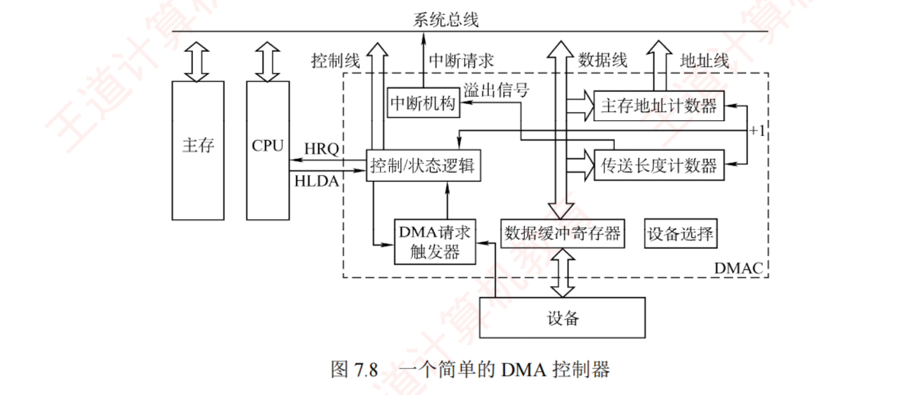
图 7.8 一个简单的 DMA 控制器 （原书 p.306）——
这张图必须看懂三条通路 ：
① HRQ / HLDA 是 DMAC 与 CPU 之间的一对握手线 （HRQ ＝ DMAC 向 CPU 请求总线，HLDA ＝ CPU 授予）；
② 传送长度计数器 →（溢出信号）→ 中断机构 →（中断请求）→ 控制线 ，这就是「传完了通知 CPU」的物理路径 ；
③ 数据缓冲寄存器同时挂着「数据线」和下方的「设备」 ——这条就是所谓「直接数据通路」，
CPU 不在这条路上 （图中 CPU 与主存是并排挂在系统总线上的另外两个方框）。
右侧那个小小的「+1 」标注，指的是主存地址计数器每传一个字自动加 1。
必记结论 · DMAC 的六个部件（各自职责必背）
部件 职责 主存地址计数器 传送前存整批数据的起始地址 ；每传送一个字自动 +1 传送长度计数器 传送前存整批数据的总字数 ；每传送一个字 −1，为 0 时表示传送结束 数据缓冲寄存器 暂存每次传送的数据。DMAC 与主存之间通常以「字」为单位，与外设之间可能以「字节或字」为单位 DMA 请求触发器 I/O 设备准备好数据时，发出 DMA 请求信号使其置位 控制/状态逻辑 设定传送方向、更新传送参数，协调 DMA 请求与 CPU 响应信号 中断机构 一批数据传送完毕时 触发中断并向 CPU 发出中断请求
DMA 传送过程中，DMA 控制器接管系统总线 ；传送结束后将总线控制权交还给 CPU 。
因此，DMA 控制器必须具备控制系统总线的能力 。
知识串联 · DMAC 是一个「小 CPU」，它自备了一整套寄存器
数据通路 把 DMAC 的六个部件和 CPU 的部件一一对上，就明白它为什么能独立干活、又为什么不碰 CPU 现场：
DMAC 的部件 相当于 CPU 里的 出处 主存地址计数器 MAR （存储器地址寄存器）ch5.1 数据缓冲寄存器 MDR （存储器数据寄存器）ch5.1 传送长度计数器 循环计数器 — 控制/状态逻辑 控制器（CU） ch5.4
⟹ DMAC 自备一整套，一个都不借 CPU 的 ⟹ CPU 的 PC、通用寄存器、标志位统统原封不动
⟹ 这就是「DMA 无须保存现场」的物理原因 （习题 28 答案 B：没有破坏
程序计数器和寄存器 的内容）。
总线仲裁 另外，「DMAC 必须具备控制系统总线的能力」这句话，在 ch6.1 的语言里就是：DMAC 是一个总线主设备（主模块） 。
HRQ/HLDA 那对握手线就是总线仲裁在实物上的样子。
📄 p.306
3. DMA 的传送方式 —— 三种共享主存的办法
主存与 I/O 设备之间交换信息时不经过 CPU。然而，当 I/O 设备和 CPU 同时访问主存时，可能发生冲突 。
为高效利用主存，DMA 与 CPU 通常采用以下三种方式共享主存。
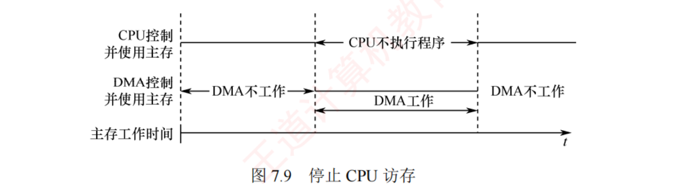
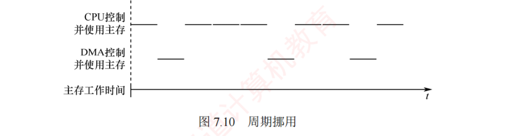
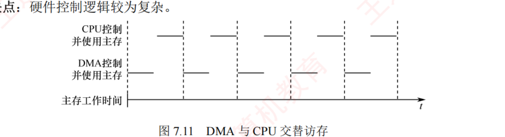
图 7.9 / 7.10 / 7.11 三种共享主存方式 （原书 p.307）——
这三张图必须并排看，单独看任何一张都没有意义。 三张图的横轴都是时间，两条线分别是「CPU 控制并使用主存」和「DMA 控制并使用主存」：图 7.9 停止 CPU 访存 ：中间标着「CPU 不执行程序 」的一整段连续长条 与下方「DMA 工作」完全重合 ——CPU 被整块地停掉；图 7.10 周期挪用 ：CPU 那条线是断续的短横线 ，DMA 在它的空隙里插入零星短横线 ——交错、非连续 ，这就是「挪用」的画法；图 7.11 交替访存 ：两条线的短横线严格交替、等长、无空隙 ——固定分时，谁也不等谁。⟹ 一眼判别法：连续长条＝停止访存；零星插入＝周期挪用；严格交替＝交替访存。
（1）停止 CPU 访存
DMAC 向 CPU 发送停止信号 ，使 CPU 放弃总线控制权并暂停访存 ，直至 DMA 完成整块数据的传送 。优点 ：控制逻辑简单，适用于数据传输速率很高的 I/O 设备成组传送 。缺点 ：DMA 访存期间 CPU 基本处于空闲状态，资源利用率较低 。
我的补讲 · 三种方式的取舍，其实是一条「让路的粒度」轴
三种方式不是三个孤立的方案，而是同一条轴上的三个刻度：CPU 一次让出多久 。
让路粒度 ←──────────────────────────────→
大 小
停止 CPU 访存 周期挪用 交替访存
（让出一整块） （让出一个存储周期） （不让，分时共享）
硬件复杂度 ←──────────────────────────────→
简单 复杂
⟹ 让得越少，CPU 效率越高，硬件就越复杂。
这是一条【典型的工程权衡曲线】，没有免费的午餐。
所以能考 Z ：
凡是问「哪种方式 CPU 利用率最高/硬件最简单/最常用」，把这条轴画出来当场就能答：
CPU 利用率最高＝交替访存；硬件最简单＝停止 CPU 访存；最常用＝周期挪用 （折中，两头都不极端）。
（2）周期挪用 ⭐ 最常用
允许 I/O 设备挪用一个主存存储周期，传送完一个数据字后立即释放总线 ，属
单字传送方式 。
优点 ：
既满足 I/O 传送需求，又较好地发挥了 CPU 与主存的效率 。
缺点 ：
每次挪用均需申请并释放总线控制权，带来一定开销 。
（3）DMA 与 CPU 交替访存
把 CPU 工作周期划成两个子周期 ，一个供 CPU、一个供 DMA，轮流访问主存 。适用于 CPU 工作周期长于主存存储周期 的场景。书上算例 ：CPU 周期 1.2μs、主存周期 < 0.6μs ⟹ 分成 C₁（专供 DMA）和 C₂（专供 CPU），分时固定分配，无须动态申请或释放 。优点 ：无须申请释放过程，速率高。缺点 ：硬件控制逻辑较为复杂 。
必记结论 · 三种方式一张表（考选择题直接查）
停止 CPU 访存 周期挪用 交替访存 粒度 整块 单字 （一个存储周期）半个 CPU 周期 总线控制权 DMA 独占一整段 每字都要申请/释放 固定分时，不用申请 CPU 状态 完全空闲 偶尔让路，每字传完就能访存 完全不受影响 硬件复杂度 最简单 中 最复杂 适用 高速设备成组传送 通用、最常用 CPU 周期 > 主存周期
周期挪用时 I/O 发起请求可能遇到三种情况（书上原话，必背） ：
①
CPU 当前不在访存 ⟹ 无冲突，直接使用总线；
②
CPU 正在访存 ⟹
需等待当前存储周期结束 ，再释放总线控制权；
③
I/O 与 CPU 同时请求访存 ，发生冲突 ⟹
CPU 暂时放弃总线控制权 （DMA 优先）。
陷阱 · 2020 真题：把「停止访存」的特征安在了「周期挪用」头上
2020 题面：设备采用周期挪用 DMA，块 512B，接口有一个 32 位数据缓冲寄存器，问下列叙述错误 的是。
错的那项：「在整个数据块的传送过程中，CPU 不可以 访问主存储器。」
——这描述的是「停止 CPU 访存 」，不是周期挪用。
周期挪用是「挪一个存储周期传一个字后立即释放 」，每个字传送完 CPU 就可以访问主存 。
📐 顺带把这题的数值关系算清（A 选项正是靠它成立）：
32 位数据缓冲寄存器 = 4B
缓冲寄存器【每满一次】就发一次总线请求，搬走这 4B
⟹ 512B ÷ 4B = 【128 次】总线请求
★「单字传送方式」的含义就在这里：
一次 DMA 传送（512B）内部拆成 128 次单字搬运，
每次挪用一个存储周期
Python 复算：512 ÷ 4 = 128 ✔
我的补讲 · 「一次 DMA」和「一次挪用」是两个层次，别混
习题 30 和习题 31 挨着考的就是这两个层次，很多人会觉得矛盾：
问的是什么 答案 题号 启动一次 DMA 传送 ，外设和主机完成多少数据的传送一个数据块 习题 31 周期挪用时每传送一个数据 ，要占用一个什么的时间一个存储周期 习题 30
📌 两个层次的嵌套关系：
【一次 DMA 传送】= 一个数据块（比如 512B）
└ 内部拆成 512/4 = 128 个【数据字】
└ 每个字挪用【一个存储周期】
└ 每次挪用都要申请/释放一次总线
⟹ 一次 DMA 启动 → 128 次总线请求（周期挪用方式下）
所以能考 Z ：
这一条直接决定了 DMA 计算题「除什么」——
每秒 DMA 次数 ＝ 设备速率 ÷ 数据块大小 （不是除以字长！ ）
而中断方式是 ：
每秒中断次数 ＝ 设备速率 ÷ 数据缓冲寄存器字长
⟹ 这就是 DMA 题与中断题在列式上的唯一 差别，也是本章计算题的头号分水岭。
📄 p.307
必记结论 · 【例 7.4】DMA 的 CPU 占用率
题 ：同一台机器（主频 500MHz、CPI 4），外设速率
40MB/s ，采用 DMA，
每次 DMA 传送块大小 1000B ，
DMA 预处理和后处理的总时钟周期数为 500 ，问 CPU 用于该外设 I/O 的时间占比是多少？
📐 列式（背式子，不背结果）：
① 每秒 DMA 次数 = 设备速率 ÷ 【数据块大小】
= 40MB/s ÷ 1000B = 40 000 次/s
② 只有预处理和后处理需要 CPU，数据传送全程由 DMA 控制
CPU 时钟周期数 = 40 000 × 500 = 2×10⁷ 周期/s
③ 占用率 = 2×10⁷ ÷ 500M = 【4%】
DMA 占用率 ＝ (设备速率 ÷ 块大小) × (预处理+后处理周期数) ÷ 主频
Python 复算：40000 次 / 2×10⁷ 周期 / 4.0% ——与书答逐个吻合 ✔
我的补讲 ⭐⭐ 例 7.1 / 7.2 / 7.4 三方对照 —— 全章最有说服力的一组数
书上说 X ：三个例题分散在三节里，各算各的。
潜台词是 Y ：
它们用的是同一台机器 （500MHz、CPI 4、32 位缓冲寄存器），
只换了 I/O 方式和外设速率——这是一组严格的控制变量实验。
例 方式 外设速率 关键中间量 CPU 占用率 结论 例 7.1 定时查询 2MB/s 间隔 2μs，5×10⁵ 次/s 4% 2MB/s 就要吃掉 4% 例 7.2 中断（单字） 40MB/s T设备 0.1μs < T中断 0.8μs — 根本不可行，必丢数据 例 7.4 DMA（块 1000B） 40MB/s 40 000 次/s 4% 同样 4%，速率高了 20 倍
⟹ 一句话：同样花掉 4% 的 CPU，查询只喂得动 2MB/s 的设备，DMA 能喂 40MB/s；而中断在 40MB/s 下直接崩。
所以能考 Z ：
这三个例题就是 2018 那道 15 分综合真题 的三个小问，王道把一道真题拆开写进了正文。
⟹ 读懂这三个例题，2018 大题不用另外准备。而且 2009 真题（7-综07）是同一个模型的另一组数字：
速率涨 10 倍（0.5→5MB/s），CPU 占用反而降 25 倍（2.5%→0.1%）。
我的补讲 · 为什么「单次开销更大」的 DMA 反而总占用更小
这是本章最值得想通的一件事，用 7-综06 的三组数最清楚（同一台机、同一块硬盘 1MB/s、50MHz）：
查询：次数 = 1MB/s ÷ 4B = 2.5×10⁵ 次/s，每次 100 周期
⟹ 2.5×10⁵ × 100 ÷ 5×10⁷ = 【50%】
中断：次数 = 1MB/s ÷ 4B = 2.5×10⁵ 次/s，每次 80 周期
⟹ 2.5×10⁵ × 80 ÷ 5×10⁷ = 【40%】
DMA ：次数 = 1MB/s ÷ 4000B = 250 次/s，每次 1500 周期
⟹ 250 × 1500 ÷ 5×10⁷ = 【0.75%】
↑
单次开销是中断的【19 倍】，总占用却只有它的【1/53】
关键在「次数」那一列：中断除的是 4B，DMA 除的是 4000B，相差 1000 倍 。
次数少了 1000 倍，单次开销只大了 19 倍 ⟹ 净赚约 53 倍。
⟹ 这就是「成批传送」的数学本质：把固定开销摊到更多数据上 。
同一个道理在 ch6 是「突发传输：一次地址、多次数据」，在 ch3 是「Cache 按块调入」——都是摊薄固定开销。
知识串联 · 「摊薄固定开销」是 408 的通用招数
成批与分块
场景 固定开销是什么 怎么摊薄 DMA vs 中断 （本章）每次的预处理/中断处理周期 一次搬一整块 （1000B 而不是 4B）突发传输 （ch6.2）每次事务的地址拍 一次地址、多次数据 Cache 按块调入 （ch3.5）一次访存的寻址延迟 一次搬一个块 ，靠空间局部性摊薄磁盘按扇区读写 （ch3.4）寻道 + 旋转延迟（毫秒级） 一次至少读一个扇区 ；连续存放减少寻道
⟹ 记住这条通用形状：只要「每次都有一笔固定成本」，答案就一定是「一次多做一点」。
组原里凡是问「为什么 X 比 Y 快」，先看是不是这条。
📄 p.308
我的补讲 · 交替访存为什么要求「CPU 周期 > 主存周期」
书上给了一个算例（CPU 周期 1.2μs、主存周期 < 0.6μs）却没解释这个条件，其实一算就明白：
交替访存 = 把一个 CPU 周期切成两个子周期
C₁ 专供 DMA、C₂ 专供 CPU
⟹ 每个子周期 = CPU 周期 ÷ 2 = 1.2μs ÷ 2 = 0.6μs
⟹ 要在 0.6μs 里完成一次完整访存
⟹ 主存存储周期必须 【< 0.6μs】
若主存周期 > 半个 CPU 周期：
子周期装不下一次访存 ⟹ 切了也没用 ⟹ 方案不成立
★ 所以条件是「CPU 工作周期【长于】主存存储周期」——
准确说是【长于两倍】才够切两半
所以能考 Z ：
这条件解释了交替访存为什么少见——现代 CPU 周期是 ns 级、主存周期几十 ns，
CPU 周期反而远小于主存周期 ，根本切不出两个够用的子周期。
⟹ 这就是为什么实际系统里周期挪用最常用 ，交替访存基本停留在教科书上。
4. DMA 的传送过程 —— 三阶段
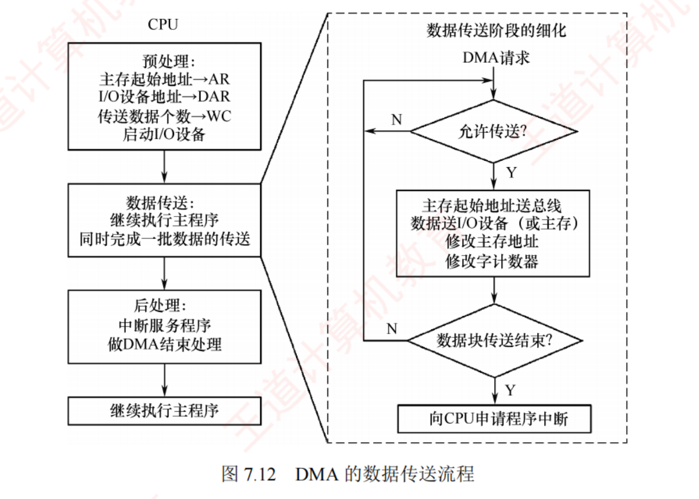
图 7.12 DMA 的数据传送流程 （原书 p.308，2019 真题的原图）——
左边一列是 CPU 视角的三阶段 ：预处理（主存起始地址→AR、I/O 设备地址→DAR、传送数据个数→WC、启动 I/O 设备 ）
→ 数据传送（继续执行主程序，同时完成一批数据的传送 ）→ 后处理（中断服务程序做 DMA 结束处理 ）→ 继续执行主程序。右边虚线框是「数据传送阶段的细化」 ，是 DMAC 内部的硬件循环：
DMA 请求 → 允许传送？（N 则等待）→ Y → 主存起始地址送总线 / 数据送 I/O 设备（或主存）/ 修改主存地址 / 修改字计数器
→ 数据块传送结束？（N 则回到「允许传送？」）→ Y → 向 CPU 申请程序中断 。⟹ 三个缩写要记住：AR ＝ 主存地址寄存器、DAR ＝ 设备地址寄存器、WC ＝ 字计数器。
必记结论 · 三阶段各自由谁完成
阶段 谁完成 做什么 （1）预处理 CPU（软件） 初始化：设置 DMAC 中的主存起始地址、传送方向、传送数据个数，并启动 I/O 设备 。随后 CPU 继续执行原程序 。设备准备好后向 DMAC 发 DMA 请求 ，DMAC 随即向 CPU 发总线请求 （2）数据传送 DMAC（纯硬件） 以数据块为单位 。获得总线控制权后，通过硬件循环自动完成输入或输出，整个过程无须 CPU 干预 （3）后处理 CPU（中断） DMAC 向 CPU 发中断请求 ，CPU 执行中断服务程序做后处理，如校验数据完整性，若出错则转入诊断程序
陷阱 · 「DMA 请求」和「总线请求」是两条不同的信号
习题 21 一题两空专门考这个：由（ ）发出 DMA 请求，传送期间总线控制权由（ ）掌握。
🔗 两级请求，一条链：
【外部设备】──① DMA 请求 ──▶【DMA 控制器】──② 总线请求(HRQ)──▶【CPU】
◀── 总线响应(HLDA)──┘
① DMA 请求：设备说「我数据准备好了，来搬」
⟹ 对应图 7.8 里的【DMA 请求触发器】被置位
② 总线请求：DMAC 说「借我用一下总线」
⟹ 对应图 7.8 里的【HRQ】信号线
⟹ 第 1 空答【外部设备】，第 2 空答【DMA 控制器】
⚠️ 头号干扰项是把第 1 空答成「DMA 控制器」——DMAC 发的是总线 请求，不是 DMA 请求。
7.3.3 功能第 1 条原话可作背诵版 ：「（DMA 控制器）
接收外设发出的 DMA 请求 ，并
向 CPU 发出总线请求信号 。」
——一句话里两个请求都出现了，主语宾语一清二楚。
顺带记住书上补的半句 ：
DMAC 在传送期间掌握总线，此时 CPU 不能响应 I/O 中断 ——
因为响应中断也要访存（写栈存断点、读中断向量），而总线正被占着。
⟹ 这是「DMA 优先于中断」在物理层面的又一体现。
📄 p.309
我的补讲 · 图 7.12 右侧那个循环，就是「硬件电路自动完成」的具体样子
书上说「主存地址的生成与传送字数的计数均由硬件电路自动完成 」，很抽象。
图 7.12 右边的虚线框把这句话画成了流程图：
DMA 请求
↓
┌─▶ 允许传送？ ──N──▶ 等待（回到判断）
│ │Y
│ ▼
│ 主存起始地址送总线
│ 数据送 I/O 设备（或主存）
│ 【修改主存地址】 ← 主存地址计数器 +1
│ 【修改字计数器】 ← 传送长度计数器 −1
│ │
│ 数据块传送结束？ ──N──┘（回到「允许传送？」）
│ │Y
│ ▼
└─ 向 CPU 申请程序中断 ← 计数器减到 0 触发
★ 这个循环里【一条 CPU 指令都没有】——
全部由 DMAC 的硬件电路跑，这就是「无须 CPU 干预」
对照程序查询方式的六步（图 7.2）会发现：两者的骨架几乎一样 ——都是
「传一次 → 改地址 → 改计数 → 判断结束没」。
⟹ 差别只在谁来跑这个循环 ：查询方式是 CPU 执行指令跑，DMA 是硬件电路跑。
这一句就把两节串起来了。
5. DMA 方式和中断方式的区别 —— 六条
考点追踪：DMA 与中断方式的对比（2013、2023）
必记结论 · 六条区别（书上原话，逐条背）
# 中断方式 DMA 方式 ① 涉及程序切换 ，需保存和恢复 CPU 现场 不中断现行程序，无须保存现场 ；除预处理和后处理外，完全不占用 CPU 资源 ② 请求只能在每条指令执行结束后 被响应 可在当前总线周期结束后立即获得响应，无须等待指令完成 ③ 数据传送依赖 CPU 执行指令 完成 由专用硬件 直接在主存与外设间传送，速率高，适用于高速外设的成组数据传输 ④ 当 CPU 和 DMA 控制器同时访问主存时，DMA 请求的优先级通常更高 ⑤ 具备处理异常事件的能力 仅用于大批量数据的高效传输 ⑥ 由软件 控制传送 由硬件 直接完成
2013 真题补充的两条对照 ：
中断请求的是「CPU 处理时间」，DMA 请求的是「总线使用权」 ；
中断响应发生在一条指令执行结束后，DMA 响应发生在一个总线事务完成后 。
我的补讲 ⭐ 第 ② 条是全章第三条分界线，画时间轴就永远不会记反
书上说 X ：中断在指令末尾响应，DMA 在总线周期末尾响应。
潜台词是 Y ：
差别的根源是「它俩要的东西不一样」。
🔑 要什么，就等什么：
中断要的是【CPU 处理时间】
⟹ 必须等 CPU 把当前指令做完（指令的原子性）
⟹ 响应时机 = 【指令】末尾
DMA 要的是【总线使用权】
⟹ 不动 CPU 现场，不必等指令做完
⟹ 响应时机 = 【总线周期 / 存储周期】末尾
一条指令的时间轴：
一条指令 = 取指周期 + 间址周期 + 执行周期 + …
= 多个【存储周期】
├───┼───┼───┼───┤ 每个「┼」都是一个存储周期边界
↑ ↑ ↑ ↑ ↑
DMA 可在【任一个】边界插进来（周期窃取）
├───────────────┤ 中断只有这【一个】机会
↑
指令做完
⟹ DMA 的插入机会远多于中断 ⟹ 响应更快
所以能考 Z ：
这条至少被考了五次，且错法高度一致——都是把中断的规则套到 DMA 上：
出处 错误说法 习题 04 的 Ⅲ 「检测有无 DMA 请求，一般安排在一条指令执行过程的末尾 」 习题 22 的 D 「DMA 要等指令周期 结束时才可以进行周期窃取」 习题 25 的 B 「DMA 请求、非屏蔽中断、可屏蔽中断都要在当前指令结束之后 才能被响应」 习题 24 五级流水线正在执行第二级流水段时来了 DMA 请求 ⟹ 正解是第二级流水段完毕后 响应，干扰项 D 是「该指令执行结束后」
习题 24 还多要一步换算 ：
流水线中「流水段长度以最复杂的操作所花时间为准，而总线周期（访存）通常最耗时 」
⟹ 流水段 ≈ 总线周期 ≈ 存储周期 ⟹ 当前流水段做完就响应。
陷阱 · 2013 真题的 D 是「双错」选项，两个半句各错一处
「中断 I/O 方式适用于所有 外部设备，DMA 方式仅 适用于快速外部设备」——两个半句都错。
半句 错在哪 中断适用于「所有 」外设 高速外设不行 （例 7.2：准备时间 < 中断处理时间就丢数据）DMA「仅 」适用于快速外设 多路型 DMA 控制器也适合同时为多个慢速 外设服务
⟹ 对慢设备而言，DMA 是「不划算」而非「不能用」 ，一字之差。
把三道题连起来，「能 / 适合 / 不限于」就问全了：
习题 05 ：能发 DMA 请求的
只有带 DMA 接口的设备 （高速、大批量都不够，
必须有硬件 ）；
2025 真题 ：
适合 用 DMA 的是
网卡、固态硬盘 （块设备），键盘、针式打印机是低速字符设备；
2013 真题 ：但 DMA
并不限于 快速外设（多路型 DMAC）。
知识串联 · 三种 I/O 方式各自适合什么设备
设备分类
方式 适合的设备 依据（哪年真题） 程序查询 / 中断 字符型设备 ：键盘、鼠标、针式打印机字符或字 为单位传输）2022 （中断适用字符型设备）· 2025 （键盘、针式打印机不适合 DMA）DMA 块设备 ：磁盘、SSD、网卡、显卡、声卡数据块 为单位）7.3.3 正文 · 2023 （SSD、网络适配器）· 2025 （网卡、固态硬盘）
⟹ 这个「字符设备 / 块设备」的二分法，在 OS 的设备管理里是正式的设备分类标准
（还有一类是网络设备）。组原这边只是借用它来判断该配哪种 I/O 方式。
📄 p.315
我的补讲 · 第 ⑤ 条常被忽略，但它划定了 DMA 的能力边界
书上说 X ：「中断方式具备处理异常事件的能力，而 DMA 方式仅用于大批量数据的高效传输。」
潜台词是 Y ：
DMA 再快，也不能取代中断 ——它压根不是干那个用的。
中断能干而 DMA 不能干的事：
· 处理缺页、除零、非法指令（异常）
· 处理掉电、总线错误（NMI）
· 响应键盘、鼠标这类【零星、不可预测】的事件
· 时钟中断驱动的进程调度
DMA 只会干一件事：
· 把一大块数据从 A 搬到 B
⟹ 而且 DMA 自己还【要靠中断】来做后处理
⟹ 二者不是替代关系，是【分工】关系
所以能考 Z ：
「DMA 优先级高于中断」这句话要看语境 ——
访问主存/总线时 DMA 优先（第 ④ 条），但这不代表「DMA 比中断重要」或「DMA 能替代中断」。
习题 03 的说法 Ⅰ「DMA 的优先级比程序中断的优先级要高」判正确 ，
正是因为它说的是总线仲裁层面 的优先级。
知识串联 · 「谁优先」在 408 里的三个层面，别混为一谈
优先级
层面 谁跟谁比 结论 出处 总线仲裁 DMAC vs CPU DMA 优先 （不及时访存会丢数据）本章 · 2012 综 · 2022 综 中断响应 NMI vs INTR NMI 优先 （且不受开/关中断限制）本章 · 2020 中断处理（嵌套） 各中断源之间 由屏蔽字 动态决定 本章 · 2024
⚠️ 习题 25 的 C「非屏蔽中断请求优先级最高，可屏蔽中断请求优先级最低」判错 ，
就是因为它漏了 DMA 比 NMI 还高 ——但那是另一个层面 （DMA 抢的是总线，不是 CPU 时间，
两者根本不在同一个赛道上）。
7.3 的五道综合真题 —— 按分值算，这才是本章的重心
我的补讲 · 先给一张「综合真题地图」，知道每道题在考什么
7.3 的 27 页里藏着 5 道综合真题（≈75 分）。它们不是随机分布的，而是分成三类：
年份 类型 考什么 难点在哪 2009 纯效率计算 中断占用率 + DMA 占用率 CPI 第 1 问要乘、第 2 问不能乘 2018 定时查询间隔 + 中断可行性 + DMA 占用率 就是例 7.1/7.2/7.4 三个例题 2012 跨章综合 MIPS + Cache 缺失 + 缺页 + DMA 请求次数 + 多体交叉带宽 缺页率的基数是 300K 不是 30M 2022 磁盘地址三字段 + 平均存取时间 + DMA 总线请求次数 前两问是 ch3.4；第 3 问 512B ÷ 64bit 的单位 2016 时序分析 异步串行帧格式 + 中断时序下的两个时间 「总时间」与「CPU 时间」必须分开算
⟹ 从这张表能读出命题规律： 纯效率计算年年可能考（模型只有那三个）；
跨章综合喜欢挂在 ch3（Cache/虚存/磁盘）上；时序分析只出过一次但难度最高。
⟹ 复习顺序建议：先把例 7.1/7.2/7.4 练到闭着眼睛能列式（覆盖 2009、2018），
再补 2012 的跨章部分（回 ch3 复习），最后专门啃 2016。
必记结论 · 效率计算的四个模板（覆盖全部 5 道综合真题）
# 模板 列式 ① 定时查询的间隔与占用率 间隔 ＝ 缓冲区容量 ÷ 设备速率；占用率 ＝ (1÷间隔) × 每次周期数 ÷ 主频 ② 中断方式的可行性判据 比较 T设备（＝缓冲区容量 ÷ 设备速率）与 T中断（＝周期数 ÷ 主频） ③ 中断方式的占用率 (设备速率 ÷ 缓冲寄存器字长 ) × 每次周期数 ÷ 主频 ④ DMA 方式的占用率 (设备速率 ÷ 数据块大小 ) × (预+后处理周期数) ÷ 主频
③ 与 ④ 的唯一差别是分母：中断除字长 ，DMA 除块大小 。这一条决定了 90% 的对错。
陷阱 · 2016 真题：「完成任务的时间」≠「CPU 用于任务的时间」
题设 ：CPU 主频 50MHz、CPI 4；设备 D 从收到启动命令到字符送入 I/O 端口需
0.5ms ；
中断响应需 10 个时钟周期，中断服务程序共 20 条指令，其中第 15 条指令启动 D 工作 ；读取 1000 个字符。
🕐 先把一个字符的周期在时序图上拆开：
外设 D： ├──── 工作（0.5ms）────┤完成
CPU ： 启动↑ ↑请求 ↑响应 → 服务程序
├─第1~14条─┤
第15条：启动D ← D 又开始工作
├─第16~20条─┤（与 D 【并行】）
⟹ 串行段 = D 工作 + 中断响应 + 服务程序【前 15 条】
（第 15 条一执行，D 就重新开始工作，后 5 条与它并行）
📐 时间 ①：完成任务所需时间（挂钟时间）
时钟周期 = 1 ÷ 50MHz = 20ns
D 送字符到端口 = 0.5ms ÷ 20ns = 2.5×10⁴ 周期
一个字符 = 2.5×10⁴ + 10 + 15×4 = 25 070 周期
1000 个 = 25 070 000 周期
📐 时间 ②：CPU 用于该任务的时间（CPU 时间）
每字符 CPU 真正忙 = 中断响应 10 + 【全部 20 条】×4 = 90 周期
1000 个 = 90 000 = 9×10⁴ 周期
⟹ 25 070 000 ÷ 90 000 ≈ 278 倍
CPU 只有约 0.36% 的时间在伺候这个设备
⚠️ 两个时间有两处 差别，一处都不能记混：
完成任务的总时间 CPU 用于任务的时间 含设备准备时间 2.5×10⁴？ 含 （挂钟要等 D）不含 （等的时候 CPU 在干别的）算几条指令？ 前 15 条 （第 15 条之后并行了）全部 20 条 （CPU 确实执行了 20 条）
「其中第 15 条指令启动 D 工作」这句话是整道题的机关 ——它同时决定了这两处。
Python 复算：25070 / 25070000 / 90000，与书答逐个吻合 ✔
2016 统考真题题干自带的时序图 （原书 p.315）——
它是图 7.3 的加强版 ：上排「外设 D」仍是「工作→完成」的循环，下排 CPU 多标了「启动」和「返回」 两个动作。
正是「启动」这个标注告诉你：CPU 在服务程序里要重新启动 D，而这一步发生在第 15 条指令。
⟹ 做这道题时先在图上圈出「启动」的位置，串行段的边界就出来了。
我的补讲 · 2012 真题最容易错的一步：缺页率的基数是谁
题设 ：主频 80MHz、CPI 4、平均每条指令访存 1.5 次、块大小 16B、Cache 命中率 99%、总线宽 32 位；
「假定在 Cache 缺失的情况下访问主存时 ，存在 0.0005% 的缺页率」 。
📐 逐问列式：
1) MIPS = 主频 ÷ CPI ÷ 10⁶ = 80M ÷ 4 ÷ 10⁶ = 20
每秒 Cache 缺失 = 20M × 1.5 × (1−99%) = 300 000 = 300K 次/s
主存带宽 = 300K/s × 16B = 4.8MB/s
★ 乘的是【块大小】，因为 Cache 与主存以【块】为单位交换
2) 每秒缺页 = 【300K】× 0.0005% = 300 000 × 5×10⁻⁶ = 1.5 次/s
★★ 基数是【300K（Cache 缺失次数）】，
不是【30M（总访存次数 20M×1.5）】！
因为题干说「在 Cache 缺失的情况下访问主存时」才有缺页
用错基数会得到 150 次/s，差 100 倍
每秒 DMA 请求 = 1.5 × (4KB ÷ 4B) = 1.5 × 1024 = 1536 次/s
★ 每页 4KB 要搬进内存，每次 DMA 请求搬 32 位 = 4B
4) 4 体低位交叉，每 1/4 存储周期启动一个体
⟹ 一个存储周期（50ns）内 4 个体各完成一次存取
最大带宽 = 4 × 4B ÷ 50ns = 16B ÷ 50ns = 320MB/s
另一个常错点：0.0005% ＝ 5×10⁻⁶，不是 5×10⁻⁴。百分号别漏掉。
Python 复算：20 / 300000 / 4.8MB/s / 1.5 / 1536 / 320MB/s ——六个数全部吻合 ✔
知识串联 · 2012 真题的跨章地图（它其实是一道组原总复习题）
问 考点 回哪一章复习 1) MIPS 性能指标 性能指标 ch1.3 1) Cache 缺失次数、主存带宽 命中率、块传送 Cache ch3.5 2) 缺页异常 虚拟存储器 虚存 ch3.6 2) DMA 请求次数 周期挪用、缓冲寄存器 ch7.3.3 （本节）3) DMA 优先级 总线仲裁 总线仲裁 ch6.1 + 本节 4) 4 体低位交叉带宽 多体并行存储器 多体交叉 ch3.2
⟹ 六个小问横跨四章。这类题的应对办法是逐问定位到章 ，而不是当成一道 I/O 题硬做。
第 3 问是简答，答两句即可：DMA 优先级更高；因为若 DMA 请求得不到及时响应，I/O 传输数据可能丢失 。
知识串联 · 2022 真题：前两问其实是 ch3.4 的磁盘题
磁盘 2022 那道题只有第 3 问属于本章，前两问完全是 ch3.4 的内容，但因为挂着 DMA 的壳被归进了 ch7：
1) 磁盘地址 = 【柱面号(磁道号)】+【磁头号(盘面号)】+【扇区号】
★ 顺序固定，柱面号在最前 —— 因为换柱面要移动磁头臂（最慢），
连续存放应先用完同一柱面的所有盘面
20000 个柱面 ⟹ ⌈log₂20000⌉ = 15 位
4 盘片×2 面 = 8 个盘面 ⟹ log₂8 = 3 位
500 个扇区 ⟹ ⌈log₂500⌉ = 9 位
2) 存取时间 = 寻道时间 + 旋转延迟 + 传输时间
转一圈 = 60×10³ms ÷ 7200 ≈ 8.33ms
平均旋转延迟 = 转【半圈】= 8.33 ÷ 2 ≈ 4.17ms
传输一个扇区 = 转一圈 ÷ 每道扇区数 = 8.33 ÷ 500 ≈ 0.017ms
⟹ 5 + 4.17 + 0.017 = 【9.18ms】
★ 三项量级差异极大：寻道 5ms ≫ 旋转 4.17ms ≫ 传输 0.017ms
⟹ 磁盘时间几乎全花在【机械移动】上，真正传数据只占 0.2%
3) 【本章内容】总线请求次数 = 扇区数据量 ÷ 数据缓冲区大小
= 512B ÷ 64bit = 512B ÷ 8B = 【64 次】
⚠️ 单位陷阱：512 是【字节】、64 是【位】，
必须先把 64bit 换成 8B。直接 512÷64=8 就错了 8 倍
Python 复算：15 / 3 / 9 位；8.333ms、9.183ms；64 次 —— 全部吻合 ✔
⟹ 如果你对第 1、2 问不熟，问题不在本章，回 ch3.4 补磁盘那一节。
📄 p.326
我的补讲 · 综合题的开场三件事（沿用 ch4/ch5 的做法）
本章五道综合真题，动笔前先固定做三件事，能避掉一大半失分：
# 做什么 为什么 ① 把所有「位」换成「字节」 32 位缓冲寄存器 ⟹ 4B；64 位缓冲区 ⟹ 8B。2022 综合真题第 3 问就死在 512B ÷ 64bit 上 ② 圈出每个开销的单位是「条」还是「周期」 给「条」要 × CPI，给「周期」不能乘。2009 综合题第 1 问要乘、第 2 问不能乘 ③ 确认这一问是查询/中断还是 DMA 决定「每秒次数」除的是缓冲寄存器字长 还是数据块大小
再加一条自查 ：
算出来的占用率若超过 100% ，不要立刻认为算错了 ——
7-综03 的答案就是 104.86%，它正是在用一个荒谬的数字证明「查询方式喂不动磁盘」。
反过来，若 DMA 的占用率算出来比中断还大，那多半是把块大小当成了字长 。
7.4 本章小结 · 7.5 常见问题和易混淆知识点
必记结论 · 7.4 章首两问的参考答案
问 1：I/O 设备有哪些编址方式？各有何特点？ 统一编址 ：把主存地址空间的一部分分配给 I/O 端口，CPU 可用普通访存指令 直接访问 I/O 设备，编程简便 ；
但会占用主存地址空间，减少可用主存容量 。独立编址 ：I/O 地址空间与主存地址空间相互独立 ，I/O 端口不占用主存资源 ；
但访问 I/O 设备需使用专用 I/O 指令（如 IN、OUT） ，增加了指令集的复杂性 。（这是 7.2.4 详表的浓缩版，答简答题按这个版本写最省字。）
必记结论 · 7.5 问题 2：向量中断 / 中断向量 / 向量地址三者关系
中断向量 ：中断服务程序的入口地址 。系统通常把所有中断向量集中组织成一张中断向量表 ；
也有系统在表中存放转移指令，构成中断向量转移表 。向量地址 ：中断向量表（或转移表）中某一项的内存起始地址 。通常由中断类型号（也称中断号）乘以表项长度 算出。
例如表项占 4 字节、中断类型号为 5，则向量地址 ＝ 5×4 ＝ 20 （假设表从 0 开始）。
因此，向量地址是 CPU 用于定位中断向量的「索引位置」。 向量中断 ：一种能够自动识别中断源并快速转移至对应服务程序 的中断处理方式。中断发生时，
中断源（或中断控制器）向 CPU 提供中断类型号，CPU 据此生成向量地址，并从向量表中取出对应的中断向量（入口地址），直接转移执行 。
必记结论 · 7.5 问题 3：程序中断与子程序调用的四点区别（简答题模板）
维度 子程序调用 程序中断 1) 触发时机 程序员通过 CALL 指令主动发起 ，发生时刻和位置是确定的 由外部设备或内部事件随机触发 ，CPU 只在每条指令执行结束时采样，具有异步性和不可预测性 2) 服务关系 完全为主程序服务 ，二者构成主从关系 与主程序无直接关联 ，是为响应外部事件而执行的独立任务 ，二者属于平行关系 3) 实现机制 纯软件行为 ，只需利用堆栈保存返回地址，无须额外硬件支持 依赖软硬件协同 ，需借助中断请求线、中断控制器和优先级判优电路 等硬件4) 嵌套级别 可多层嵌套，深度主要受限于系统堆栈空间 嵌套受优先级机制约束 ——只有更高优先级的中断才能打断当前服务程序 ；实际系统中优先级通常较少，嵌套层次有限
我的补讲 · 第 3) 条「实现机制」正是前面那个逻辑死结的另一种说法
书上说 X ：子程序调用是纯软件行为，中断依赖软硬件协同。
潜台词是 Y ：
根本原因是「谁知道自己要跳」。
CALL 是程序【自己】发起的
⟹ 它知道自己马上要跳走
⟹ 可以先执行一条「把返回地址压栈」的指令，再跳
⟹ 纯软件就够了
中断是【外面】强插的
⟹ 被中断的程序【毫不知情】，它正在若无其事地往下跑
⟹ 没有任何一条指令能"提前"把断点存起来
⟹ 只能靠【硬件】在它背后偷偷记账（中断隐指令）
所以能考 Z ：
习题 27「中断发生时，PC 内容的保存和更新由谁完成」——答 A 硬件自动 ；
干扰项 B「进栈指令和转移指令」正是子程序调用 的做法。
⟹ 这道题实际上是在问你「分得清中断和 CALL 吗」。
必记结论 · 7.5 问题 1：开中断时检测到中断，一定会立即响应吗？
「是的。」 在开中断状态下，CPU 总在每条指令执行结束时采样中断请求。
一旦检测到中断请求，即表明该请求未被屏蔽且有效 ，CPU 必定会立即响应 。 需要说明的是 ：在单重中断 系统中，进入中断服务程序后通常会自动关中断，此后即使有新的中断请求也无法被检测，
但这不属于「开中断」情形，违背题设前提 ；而在多重中断 系统中，
高优先级中断可在低优先级的中断服务程序执行期间被检测并响应，因其未被屏蔽 。
我的补讲 · 这一问回答了本章最纠结的一个矛盾
读到这里你可能会觉得矛盾 ：
前面说「只要有中断请求就响应」是错的（习题 12 的 D），
这里又说「检测到就一定响应」是对的——到底哪个对？
🔑 关键在「有请求」和「检测到」是两回事：
【有中断请求】 —— 客观上存在一个请求信号
↓ 可能被【关中断】挡在门外
↓ 可能被【屏蔽字】挡在判优电路之外
【CPU 检测到】 —— 请求已经穿过了这两道关卡
↓
【一定响应】 ✔
⟹「检测到」这三个字本身就蕴含了
「开中断 + 未被屏蔽」两个前提
所以能考 Z ：
凡是选项写「有 中断请求就…」——错；写「检测到 中断请求就…」——对。
年份 说法 判 2021 的 B「CPU 只有在检测到 中断请求信号后，才会进入中断响应周期」 对 2021 的 D「若 CPU 检测到 中断请求信号，则一定存在未被屏蔽 的中断源请求信号」 对 2023 的 C「开中断时 CPU 检测到 中断请求后就进行中断响应 」 对 习题 12 的 D 「只要有 中断请求发生，一条指令执行结束后 CPU 就 进入中断响应周期」 错
⟹ 三道真题都在这条上给分，一道习题在这条上扣分。一词之差，全章分水岭。
知识串联 · 2021 真题还捎带考了一句 OS
内核态 2021 真题的错误选项是「仅在用户态下 ，CPU 才能检测和响应中断」。
反证极漂亮：中断服务程序运行在内核态 ；多重中断＝在一个服务程序执行期间响应新中断＝在内核态下响应中断 。
若 A 成立，中断嵌套就根本不可能存在，与题干「多重中断系统」矛盾。 ⟹ 这提示我们：本章的题可能用 OS 的概念做判据 （内核态、进程阻塞、就绪队列、原子操作），
组原和 OS 在 I/O 这一章是接壤的。
我的补讲 · 7.4 那三个触发器，把「两道闸门」讲清楚了
7.4 回答「CPU 响应中断应具备哪些条件」时，用的是硬件触发器视角 ，
它比 7.3.2 的逻辑视角多告诉你一件事：三个触发器分居两处 。
┌──────────── I/O 接口里 ────────────┐
│ 中断请求触发器 … 外设发请求时置 1 │ ← 闸门一
│ 中断允许触发器 … 为 1 才把请求送出 │
└───────────────────┬─────────────────┘
│ 请求经控制线送到 CPU
┌───────────────────▼──── CPU 里 ─────┐
│ 中断屏蔽触发器 … 开放才响应 │ ← 闸门二
└─────────────────────────────────────┘
⟹ 请求要先过【接口的闸门】，才轮得到【CPU 的闸门】
所以能考 Z ：
这解释了两件事——
① 为什么「外设自己发不出中断」 （7.2 习题 11）：请求必须经接口里的中断允许触发器放行；
② 为什么要在接口里设中断触发器 （习题 14）：请求要在接口里先被锁存住，等 CPU 来采样。
⟹ 7.3.2 的「三条件」和 7.4 的「三触发器」是同一件事的软硬两面，两套都要能背。
全章收束 · 一页纸带走
必记结论 · 三条分界线（本章丢分都在这里）
# 分界线 一句话判据 考过的年份 ① 响应优先级 vs 处理优先级 响应＝谁先「开始」（硬件固定）；处理＝谁先「执行完」（屏蔽字可调） 2017 · 2020 · 2021 · 2024 ② 断点 vs 现场 断点（PC+PSW）＝硬件（中断隐指令）存；现场（通用寄存器+屏蔽字）＝软件（服务程序）存 2012 · 2018 · 2024 ③ 中断 vs DMA 的响应时机 中断要 CPU 时间 ⟹ 等「指令」末尾；DMA 要总线 ⟹ 等「总线周期」末尾 ⟹ DMA 更快 2013 · 2020 · 2024
必记结论 · 三种 I/O 方式总表（选择题一查就出）
程序查询 程序中断 DMA 数据由谁搬 CPU 执行查询程序 CPU 执行中断服务程序 DMAC 硬件循环 CPU 与外设 串行 并行 并行 传送与主程序 串行 串行 并行 传送单位 一个字/字节 一个字/字节 数据块 请求的是 — CPU 处理时间 总线使用权 响应时机 — 指令末尾 总线周期末尾 保存现场 — 要 不要 能处理异常 — 能 不能 （只管批量传数据）每秒次数 ＝ 速率 ÷ 缓冲区容量 缓冲寄存器字长 数据块大小 适用设备 字符型设备 （键盘、鼠标、针式打印机）块设备 （磁盘、SSD、网卡、显卡、声卡）
我的补讲 · 最后一次把「谁干的」问全：一张责任表
本章至少有 8 道题在问「这件事是硬件干的还是软件干的」，一次列全：
动作 谁干的 在哪一步 关中断（第一次） 硬件 （中断隐指令）九步的 ① 保存断点（PC + PSW） 硬件 （中断隐指令）九步的 ② 形成服务程序入口地址送 PC 硬件 （中断隐指令）九步的 ③ 保存现场（通用寄存器） 软件 （中断服务程序）九步的 ④ 设置新的中断屏蔽字 软件 （中断服务程序）九步的 ④ 关中断（第二次）、开中断 软件 （关/开中断指令）九步的 ⑤⑦⑨ 中断响应判优 硬件 （判优电路 / 排队器）响应阶段之前 DMA 预处理（设参数、启动设备） 软件 （CPU / 设备驱动程序）DMA 第 ① 段 DMA 数据传送、修改地址与计数 硬件 （DMAC）DMA 第 ② 段 DMA 后处理（校验、诊断） 软件 （中断服务程序）DMA 第 ③ 段
⟹ 记忆锚点：「转过去之前」的三件事是硬件干的，「转过去之后」的都是软件干的；
DMA 则是「两头软件、中间硬件」。
我的补讲 · 本章的名词辨析清单（每一组都被考过）
易混组 区别 考过的题 接口 / 端口 端口是接口内部可寻址的寄存器 ；接口是盒子，端口是抽屉7.1 习 01 · 2014 · 2017 驱动器 / 控制器 / 驱动程序 驱动器＝设备本身（硬件）· 控制器＝I/O 接口（硬件）· 驱动程序＝OS 里的软件 2021 · 2019 中断类型号 / 中断向量 / 向量地址 类型号是编号 · 向量是入口地址 · 向量地址是「入口地址的地址」 习 02 · 习 06 · 2012 中断隐指令 / 中断返回指令 隐指令不在指令系统中（硬件动作的统称）；返回指令是真指令（IRET） 习 10 · 习 04 的 Ⅳ DMA 请求 / 总线请求 设备→DMAC 叫 DMA 请求；DMAC→CPU 叫总线请求（HRQ） 习 21 一次 DMA / 一次挪用 一次 DMA＝一个数据块；一次挪用＝一个数据字（一个存储周期） 习 30 · 习 31 · 2020 响应优先级 / 处理优先级 谁先开始 / 谁先结束 习 17 · 2020 · 2024 停止访存 / 周期挪用 整块停 CPU / 单字挪一个存储周期后立即释放 2020 （张冠李戴）
知识串联 · 学完本章，四科的 I/O 版图就补齐了
科目 它讲 I/O 的哪一面 与本章的接口 组原（本章） 硬件怎么实现 ：接口结构、端口编址、中断隐指令、DMAC 部件、三种共享主存方式— 操作系统 软件怎么组织 ：I/O 软件层次、设备驱动程序、中断处理程序、缓冲管理、设备分配、SPOOLing中断 设备管理 本章的「预处理由设备驱动程序做」「进程阻塞后 CPU 转去执行就绪队列中的另一进程」就是接口数据结构 —（无直接关联） — 计算机网络 网卡也是一个 I/O 设备 ：数据包到达触发外中断（2020 真题）、网卡走 DMA（2023/2025 真题）中断 网络数据包到达属于外部中断事件
⟹ 组原七章至此全部读完。I/O 是组原与 OS 交界最密的一章——
接着读 OS 的「设备管理」那一章时，你会发现它讲的正是本章的另一半。
最后提醒 · 本章书上零错误，但有两处口径要知道
本章 53 处数值我用 Python 逐个独立复算过，52 处与书答完全一致，未发现任何实质性错误 ——
这是组原七章里唯一一章（ch1–ch6 每章都抓出过 1~2 处书误）。本章可以放心信任书答。
但有两处口径值得知道：
出处 书上写的 实情 7-综03 第 2 问 105% 精确值 104.86% （书把 52428800 记作 52.4×10⁶ 后再除）。结论（>100%）不受影响 ，但要求写计算过程时按精确值更稳7-综05 第 1 问 15μs 未把周期窃取本身的 1200×0.2μs＝240μs 计入「占用处理器时间」 。王道口径＝周期窃取占的是存储周期/总线，CPU 若不访存仍可执行，不算占处理器 。考场按书答
我的补讲 · 本章 33 道真题的年份分布，看得出命题偏好
考点 考过的年份 次数 外中断 vs 内中断的判别 2009 · 2020 · 2025 3 响应优先级 vs 处理优先级 2017 · 2020 · 2021 · 2024 4 断点＝硬件 / 现场＝软件 2012 · 2018 · 2024 3 中断 vs DMA 的对比 2013 · 2019 · 2023 · 2024 4 效率计算（查询/中断/DMA 占用率） 2011 · 2014 · 2019 ＋ 综合 2009/2018 5 中断屏蔽字的构造 2011 ＋ 例 7.3 / 7-综04 1 （但必出大题变式）周期挪用的细节 2020 ＋ 综合 2012/2022 3 I/O 接口与端口 2012 · 2014 · 2017 · 2021 4
⟹ 命题偏好非常清楚：「两个概念只差一个字」的辨析题占了绝大多数
（响应/处理、断点/现场、指令末尾/总线周期末尾、外中断/内中断、块大小/字长）。
⟹ 这类题不靠理解深度，靠用词精度 。复习本章时，
与其反复读原理，不如把上面那几组「一字之差」抄在一张纸上反复看。
知识串联 · 组原七章读完了，回头看这一章在全书的位置
全书主线 组原七章其实是一条自下而上的链，ch7 是最后一环：
章 讲什么 一句话 ch1 系统概述、性能指标 机器长什么样、怎么衡量快慢 ch2 数据的表示和运算 数 怎么存、怎么算ch3 存储系统 数据放哪 （Cache / 主存 / 磁盘的层次） ch4 指令系统 怎么指挥 机器 ch5 中央处理器 指令怎么被执行 ch6 总线 各部件之间怎么连、怎么传 ch7 输入/输出系统 机器怎么跟外界打交道
⟹ ch6 和 ch7 是一对：ch6 讲「路」，ch7 讲「路上跑的 I/O 业务」 。
DMAC 抢总线（ch7）用的正是 ch6 的仲裁机制；I/O 接口挂在 I/O 总线上（ch7）正是 ch6 的总线结构。
两章连着复习，比分开看省一半力气。
知识串联 · 本章那些「一字之差」，其实来自同一种命题手法
命题手法 把本章所有「一字之差」的陷阱排在一起，会发现命题人只用了三种手法：
手法 做法 本章的例子 ① 换一个字 把正确表述里的关键词换成近义词 「屏蔽字确定处理 优先级」→ 换成「响应 」（2024）大于 处理时间」→ 换成「小于 」（2022） ② 张冠李戴 把 A 的特征安在 B 头上 把「停止 CPU 访存」的特征说成「周期挪用」的（2020） ③ 绝对化 加上「只要/一定/立即/所有/仅」 「只要 有中断请求就响应」（习 12）所有 外设、DMA 仅 适用于快速外设」（2013）
⟹ 做本章选择题时，可以反过来用这三条当筛子：
先扫一遍有没有绝对化措辞（③）；再看每个专有名词有没有被换字（①）；
最后确认每条特征是不是安对了主语（②）。三遍扫完，本章的选择题基本不会错。